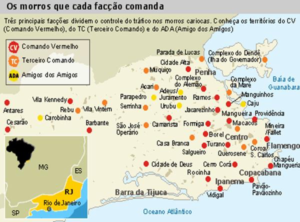
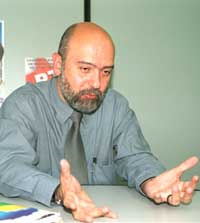
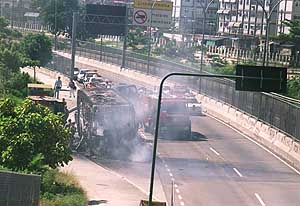
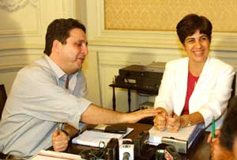
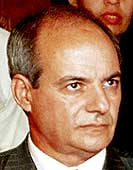
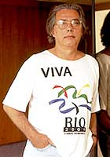
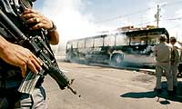
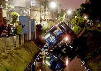
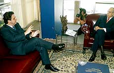

|
|||||||||||||||||
|
cliente: |
|
produto: |
|
|
Banco de Dados |
|
|
tema: |
|
Data: |
|
Segurança Abril 2003 |
|
19/03/05 14:57 |
|
versão número: |
|
NÚM. TOTAL DE PÁGINAS: |
|
01 |
|
61 |
KENNEDY
ALENCAR - da Folha de S.Paulo, em Brasília
O governo
federal passou a discutir seriamente nos últimos dias uma forma de ação para
enfrentar o problema do crime organizado no Rio de Janeiro. Estuda-se
reservadamente no Planalto até a hipótese extrema de decretar uma intervenção
federal no Estado. O custo político de tal medida, além das reações diversas e
imprevisíveis que pode gerar, torna a hipótese menos provável, mas ela não está
descartada pelo Planalto.
O governo
avalia que chegou a hora de levar a cabo um choque de segurança no Estado,
adiado até agora, segundo o poder central, por má vontade da governadora Rosinha
Garotinho (PSB).
A intenção
inicial do Planalto é pressionar duramente a governadora para tentar federalizar
o comando da polícia do Estado por um prazo determinado. O governo petista
avalia que somente com controle federal das polícias Civil e Militar do Rio
poderá coordenar ações efetivas contra o crime organizado.
Chegou à mesa
do presidente Luiz Inácio Lula da Silva um relatório reservado da Polícia
Federal dando conta de que chefes do crime organizado recebem avisos da própria
polícia sobre suas operações. "O principal problema de segurança do Rio é a
polícia", diz um auxiliar de Lula.
Uma eventual
intervenção teria que enfrentar vários obstáculos, a começar por sua
excepcionalidade. Seria a primeira medida desse tipo desde 1964 e a 13ª da
história republicana, a maioria delas realizadas em períodos não-democráticos.
Além disso, a intervenção interromperia a tramitação das emendas constitucionais
no Congresso, atual prioridade do governo Lula, e azedaria de vez o
relacionamento já ruim entre Lula e o casal Anthony e Rosinha.
Outro
obstáculo: Rosinha venceu a atual ministra da Assistência e Promoção Social,
Benedita da Silva (PT), na última eleição. A intervenção poderia soar a muitos
como vingança eleitoral.
Por outro
lado, o assunto surge no Planalto num momento em que Rosinha está vulnerável.
Sua avaliação atual pela população, segundo o Datafolha, é inferior a que tinha
Benedita da Silva ao lhe transmitir o cargo. A governadora enfrenta problemas de
caixa e ainda deve uma parcela do 13º ao funcionalismo.
Plano de ação
Uma idéia do
Planalto, segundo a Folha apurou, seria deslocar o diretor-geral da Polícia
Federal, Paulo Lacerda, para a chefia da Segurança Pública no Estado. Outra
possibilidade seria Lacerda indicar alguém de sua confiança.
Pelo artigo
34 da Constituição, a União pode intervir num Estado para "pôr termo a grave
comprometimento da ordem pública". O artigo 36 prevê que a intervenção seja
aprovada pelo Congresso, no prazo de 24 horas, por maioria simples dos
presentes, desde que atingido o quórum para a sessão. O decreto de intervenção
deve trazer "a amplitude, o prazo e as condições de execução", bem como indicar
o interventor.
Feita a
intervenção, algo que Lula deseja evitar, tentaria se chegar a um acordo com
Rosinha para deixar a cargo da União o controle das polícias e devolver a ela o
poder político.
Também pesa a
favor da ameaça de intervenção o lobby de políticos fluminenses aliados de Lula,
de empresários, juristas e até de organizações governamentais a favor de uma
intervenção para combater o crime organizado.
O ministro da
Justiça, Márcio Thomaz Bastos, mesmo ainda se convalescendo de uma pneumonia,
tem recebido esse tipo pressão, segundo auxiliares de Lula.
Na visão do
governo, a autoridade da governadora Rosinha tem se deteriorado, com ações cada
vez mais audazes do narcotráfico. No início da semana, tiros de fuzil foram
disparados contra a fachada do Hotel Glória, um dos mais tradicionais da cidade
do Rio. Como resultado de ações assim, o Rio perdeu para São Paulo a chance de
sediar em 2004 um Congresso da ONU (Organização das Nações Unidas).
Mais: para o
Planalto, a briga interna no governo e na polícia também mina a autoridade de
Rosinha. Na semana passada, o secretário da Segurança Pública do Estado, Josias
Quintal, desentendeu-se com o chefe da Polícia Civil, Álvaro Lins. Quintal
interditou parte de uma delegacia, mas Lins o desobedeceu.
A Folha
apurou que o Planalto considerou um erro Rosinha ter recusado a proposta de
"intervenção branca" feita pelo ministro da Justiça no mês passado. A proposta
previa submeter as polícias ao controle federal.
Na visão do
governo, se houver a intervenção, ela precisará ser rápida para não atrasar
muito a tramitação das reformas. Na prática, seria forçar Rosinha a aceitar
ceder o controle das polícias para retornar ao controle político.
A Folha
obteve relatos de que Lula está cada vez mais contrariado com Rosinha.
Anteontem, na reunião dos governadores, ela fez, de longe, a mais dura das
intervenções contra as propostas de reforma previdenciária e tributária. Rosinha
avisou na reunião, por exemplo, ser contrária à cobrança previdenciária dos
servidores inativos. O presidente a achou deselegante.
Lula deverá
ter ainda algumas conversas com os ministro Thomaz Bastos, Dirceu e José Viegas
(Defesa) para decidir de vez se optará pela hipótese da intervenção.
PEDRO SOARES
- da Folha de S.Paulo, no Rio
O secretário
estadual de Segurança Pública do Rio, Josias Quintal, disse ontem não acreditar
que o governo Lula decida intervir no Estado para conter a onda de violência e
afirmou que a crise na segurança pública começou no governo passado, da petista
Benedita da Silva, hoje ministra da Promoção e Assistência Social.
"Já assumimos
o governo pedindo a presença das Forças Armadas. E assumimos um governo que era
do PT, em que violência aumentou brutalmente", disse.
Segundo
Quintal, a intervenção seria um desgaste político para o governo federal, além
de a situação não justificar tal medida.
"Uma
intervenção não tem o menor cabimento, a mínima oportunidade e seria um desastre
para o próprio governo federal. Os ventos de Washington não podem soprar aqui no
Rio", disse, em referência ao fato de Lula ter sido contrário à intervenção
norte-americana no Iraque.
"No plano
político, não acredito que o presidente Lula possa imaginar uma coisa dessas,
até pela postura democrática e pela coerência que tem mostrado."
Apesar dos
atos de afronta do tráfico, como os disparos ao Hotel Glória, na segunda
passada, Quintal afirmou que não "há nada que justifique a intervenção".
Segundo
revelou ontem a Folha, o governo federal passou a discutir a hipótese
extrema de intervir no Estado para conter a crise na área de segurança pública.
A intenção do governo Lula seria federalizar as polícias estaduais.
Para Quintal,
essa proposta "não passa pela cabeça dele [Lula], com certeza". "Há muita
especulação de pessoas que opinam sem conhecimento de causa."
"A
intervenção seria uma decisão em último plano. Mas o governo terá de queimar
muitas etapas antes. Terá de assumir de fato as responsabilidades que a União
tem com a segurança pública."
Como exemplo
de tais responsabilidades, Quintal citou a repressão ao tráfico de drogas e ao
contrabando de armas. Ambos são, diz, crimes federais e hoje estão sendo
combatidos pelo Estado. Segundo ele, o governo do Rio arca com o ônus de manter
10 mil presos condenados por envolvimento com o narcotráfico.
O secretário
afirmou ter uma boa relação com o governo federal, especialmente com o ministro
Márcio Thomaz Bastos (Justiça). Segundo ele, o espírito entre as polícias
estaduais e o governo é de cooperação.
Ontem, Thomaz
Bastos, telefonou para a governadora do Rio, Rosinha Garotinho (PSB), para dizer
que o governo federal não pensa em adotar uma intervenção federal no Estado para
assumir o comando das polícias.
Garotinho quer união contra o crime no Rio
O futuro secretário de Segurança Pública do Rio de
Janeiro, Anthony Garotinho, anunciou nesta quinta-feira (24/4), em Brasília, que
o Estado vai aderir ao Sistema Único de Segurança Pública do governo federal.
“Existe uma disposição total do Rio de entrosamento com o governo federal nessa
questão da Segurança Pública. Não existe nenhuma animosidade, nenhum tipo de
empecilho, nem ninguém que possa travar essa relação, porque estes
desentendimentos só interessam aos bandidos. À população interessa que as
autoridades estejam unidas de forma responsável, de forma firme, a fim de vencer
o crime organizado”, disse Anthony Garotinho, em entrevista à imprensa, após se
reunir com o ministro da Justiça, Márcio Thomaz Bastos.
Durante o encontro, Garotinho e Thomaz Bastos discutiram medidas de cooperação
entre a União e o Estado para enfrentar a violência. E agendaram um novo
encontro para assinar o convênio que prevê a liberação de recursos para a
construção de um alambrado em torno do complexo penitenciário de Bangu, no Rio.
“Vamos continuar trabalhando em parceria e cooperação, como estamos fazendo com
todos os estados. Isso é um processo, isso não é um trabalho que se crie, não é
um estado que se estabeleça da noite para o dia. E nós estamos trabalhando nesse
processo”, afirmou Thomaz Bastos.
Garotinho defendeu mudanças na legislação federal, com o objetivo de auxiliar os
estados no combate à violência. “Durante o meu governo, foram postos para fora
da polícia mais de 650 policiais envolvidos com seqüestro, extorsão e eles
acabaram retornando por medida judicial. Por isso, uma grande medida que poderia
ser adotada pelo governo federal seria flexibilizar alguns pontos da
Constituição e dos Códigos Penal e de Processo Penal para que a ação dos agentes
policiais nos estados seja facilitada”, disse.
O futuro secretário reiterou que não vai tolerar desvios de policiais. “Bandido
vai ser tratado como bandido. E o policial que andar fora da lei também vai ser
tratado como bandido. Peço à população que confie e tenha a absoluta certeza que
não transigiremos, em momento algum, com os criminosos. Nós precisamos
estabelecer a paz como princípio. Restabelecer a autoridade, desarmar os
espíritos e nos armarmos para vencer essa guerra em favor da população. Não se
trata de a, b ou c. Essa é uma guerra que todo cidadão de bem sai perdendo e só
o criminoso sai ganhando. Agora é a hora de dar as mãos e trabalhar em favor da
população”, frisou.
O ex-governador disse que investirá na área de inteligência para que a polícia
seja mais eficiente e menos violenta. “Primeiro, queremos reestruturar as
delegacias especializadas. Precisamos remontar um sistema de inteligência que
deixe a polícia cada vez mais inteligente e menos violenta. Em todo o mundo, a
polícia mais eficiente é a mais inteligente. Não é a mais agressiva, que sai
atirando para todo o lado”, afirmou.
Além da reestruturação das delegacias especializadas, ele prometeu aumentar os
policiamentos na Linha Amarela, Linha Vermelha, Avenida Brasil e nos corredores
principais da Zona Sul e da Barra da Tijuca. “Estas áreas terão que ser
monitoradas com um número expressivo de viaturas e câmeras, que instalaremos
também nos túneis”, adiantou.
Para Garotinho, é importante não só aumentar a sensação, mas aprimorar, de fato,
a segurança da população. “Não podemos iludir a população. É preciso mudar a
realidade da segurança. Não adianta melhorar a sensação de segurança e as
pessoas continuarem sendo assaltadas e assistindo a novos ônibus serem queimados
nas ruas. Então, vamos colocar mais policiais nas ruas, criar corredores
especiais e implantar um choque de tecnologia na área de segurança”, garantiu.
Em relação à equipe que assumirá a Segurança, Garotinho afirmou que conversará
sobre o assunto com a governadora Rosinha ainda hoje. “A governadora quem tem o
poder de nomear. Eu tenho sugestões. Gostaria de trabalhar com o Dr. Marcelo
Itagiba. Ele é um policial competente, preparado e já deu demonstrações de sua
capacidade”, disse.
Rosinha decide afastar Josias Quintal, que exercerá mandato de deputado federal
Marco Antônio Martins e Paulo de Tarso Lyra - Repórter do JB
BRASÍLIA E RIO - Em busca de uma solução para enfrentar a ousadia de traficantes e tentar reduzir a violência no Rio, a governadora Rosinha Matheus anunciou, na tarde de ontem, no Palácio Laranjeiras, a nomeação de seu marido e ex-governador do Rio, Anthony Garotinho, para o cargo de secretário de Segurança Pública, em substituição a Josias Quintal. A partir de segunda-feira, o coronel Josias assumirá a cadeira de deputado federal pelo PSB.
- Estou colocando na secretaria o que tenho de mais importante na minha vida que é o meu marido - disse a governadora, ao anunciar a escolha do ex-governador.
Sentado à direita de Rosinha Matheus, Josias permaneceu com a fisionomia fechada, visivelmente constrangido com a saída da secretaria. Ao lado esquerdo da governadora, Garotinho admitiu que a violência da última semana foi determinante para assumir o cargo.
- Não tenho o direito, conhecendo o assunto como conheço, de negar a dar minha contribuição nesse momento difícil - disse o secretário, que assume segunda-feira.
Depois do anúncio no Palácio Laranjeiras, Garotinho segui para Brasília, onde se reuniu com parte da bancada fluminense e deputados do PSB. Durante cerca de uma hora, o novo secretário pediu apoio da bancada, explicou as razões para aceitar o convite e voltou a criticar a ex-governadora Benedita da Silva, do PT.
- Ocorreram alterações, num tempo muito curto, que acabaram favorecendo o surgimento de fatos que não ocorriam em outras épocas - disse Garotinho, citando uma série de estatísticas favoráveis a seu período como governador.
Depois de responder uma série de perguntas dos deputados, Garotinho propôs que a bancada apresentasse um projeto tornando inafiançável o crime de roubo e receptação de carga. Segundo ele, hoje a polícia fecha um ferro-velho mas os estabelecimentos são reabertos pouco depois, dando seqüência a uma série de crimes. O novo secretário também anunciou que será implantado gradativamente um plano de segurança que inclui a instalação de câmeras nos túneis, aumento de viaturas e atenção especial nas linahs Vermelha e Amarela e Avenida Brasil.
Mais uma vez, o ex-governador afastou a possibilidade de intervenção federal no Rio, afirmando que sequer conhece esse projeto. Ao fim do encontro, o secretário fez um sinal de calma e não respondeu se defende ou não a volta do traficante Luiz Fernando da Costa, o Fernandinho Beira-Mar, para o Estado, já que, nos próximos dias, ele deve deixar o presídio onde se encontra, em Alagoas.
Hoje, às 10h, Garotinho reúne-se com a executiva do PSB e, em seguida, às 11h30, encontra-se com o ministro da Justiça, Márcio Thomaz Bastos.
Delegado da PF auxiliaria novo secretário
A ida de Garotinho para a Secretaria de Segurança Pública deve ser acompanhada pelo ex-superintendente da Polícia Federal no Rio, delegado Marcelo Itagiba. Por enquanto, não se sabe ainda como, mas o governador não descarta a participação de Itagiba para ajudá-lo na administração da pasta após o delegado deixar a superintendência em maio.
O ex-governador na Secretaria de Segurança Pública representa a realização de um desejo que ele manifestou durante a campanha eleitoral, ano passado. Além disso, seu nome é o único que poderia substituir, sem contestações dentro do governo, a Josias Quintal, eleito deputado federal pelo PSB com mais de 100 mil votos.
A presença de Garotinho no cargo representa, neste momento, união entre os setores responsáveis pela segurança no Estado, que se desentenderam com o perfil personalista de Josias. Isso sem contar que nestes quatro meses, o deputado federal reuniu toda cúpula da segurança pública apenas duas vezes. Uma após o fechamento do comércio em fevereiro, e, outra, depois de disparos na fachada do Meridien, em março. Entre 1999 e 2002, esses encontros eram semanais.
Na posse, Garotinho prometeu atenção às delegacias especializadas. Além do aumento de policiais nas ruas. Ele e Rosinha elogiaram Josias, que, horas antes do anúncio oficial, comentou o caso num almoço com militares do Exército numa churrascaria no Aterro do Flamengo.
Colaborou Carolina Pinho
24 de fevereiro
Traficantes promovem ataques simultâneos em 23 bairros do Rio e cinco municípios da Região Metropolitana. Uma pessoa é morta e 16 feridas, 34 veículos são incendiados e oito, depredados
25 de fevereiro
Seis ônibus são incendiados, um supermercado é metralhado e o comércio fecha na Zona Norte.
26 de fevereiro
Dois supermercados são saqueados, um ônibus apedrejado e cinco incendiados. 78 pessoas são presas e quatro bombas caseiras encontradas na Zona Oeste.
2 de abril
A estação do bondinho do Corcovado é alvo de vários disparos de madrugada.
9 de abril
Dois PMs são assassinados, nove ônibus incendiados e uma granada é jogada em um shopping da Zona Sul.
21 de abril
Traficantes atacam a tiros um microônibus da PM no Complexo da Maré, quatro policiais e um menino são baleados. Cinco PMs ficam feridos quando o veículo cai num valão. No dia seguinte, um ônibus é incendiado no mesmo local.
''A polícia não tem que ter medo de bandido. Quero a polícia dia e noite em qualquer lugar onde haja criminosos'' 17 DE JANEIRO depois das mortes de dois PM.
''O Estado é muito grande e, por isso, a polícia não pôde estar presente em todos os locais'' 25 DE FEVEREIRO após dois dias de ataques do tráfico.
''Nosso bloco está na rua. Se tiver que ter conflito armado, que tenha. E se alguém tiver que morrer por isso, que morra. Nós vamos partir para dentro. Não tem conversa'' 27 DE FEVEREIRO no terceiro dia de terror.
''Há dados indicando que o crime organizado se encontra perdido. Eles estão sem comando, com apenas alguns chefetes, e aí fazem bobagens'' 1 DE ABRIL Um dia antes do ataque à estação do Corcovado.
''Foram uns tirinhos'' 17 DE ABRIL após disparos de fuzil na fachada do Hotel Glória.
''Eles têm que saber que não se atira em policiais. Se não forem presos até domingo, segunda-feira eu dou uma ajudazinha.'' 23 DE ABRIL depois de ataque a um microônibus da PM, na Maré. Horas depois, no mesmo lugar, um ônibus foi incendiado e, no dia seguinte, Josias, substituído.
Ministro da Justiça e Secretário Nacional de Segurança elogiam decisão da governadora do Rio
HUGO MARQUES - Da Sucursal de Brasília
BRASÍLIA - A nomeação do ex-governador Anthony Garotinho para a Secretaria de Segurança Pública do Rio foi recebida com surpresa pelo governo federal, mas de forma positiva. O primeiro a elogiar a nomeação foi o secretário Nacional de Segurança Pública, Luiz Eduardo Soares, demitido por Garotinho durante uma entrevista ao vivo na TV, quando ocupava a subsecretaria de Segurança do Rio.
Para Soares, a grande liderança que Garotinho tem no Rio e no restante do país - conquistada durante a campanha eleitoral para presidente da República, ano passado - fortalece a área de segurança.
- Saúdo a disposição do ex-governador de assumir mais esse desafio. É uma demonstração de coragem e é muito positivo para a área de segurança pública do Estado - diz Soares.
O secretário acredita que a nomeação represente um avanço no trabalho integrado entre os governos federal e estadual. Da União, assegura Soares, o ex-governador terá toda boa vontade para implantar uma parceria no combate ao crime organizado. A adesão do Rio ao Sistema Único de Segurança Pública, diz Soares, depende da nova gestão.
- A vitória do governo federal depende da vitória do Rio. Estamos no mesmo barco. Esperamos que a mudança seja o signo de um novo começo - comentou Soares.
O ministro da Justiça, Márcio Thomaz Bastos, preferiu não tecer muitos comentários sobre a nomeação de Garotinho para a Secretaria de Segurança. Para o ministro, é uma decisão interna do governo do Rio.
- Vamos torcer para que dê tudo certo com esse novo parceiro - disse o ministro, segundo transcreveu sua assessoria.
Nos bastidores, porém, a nomeação de Garotinho despertou muitas especulações entre assessores de setores do governo federal. Uns enxergaram na decisão da governadora uma atitude de puro nepotismo. Outros preferiram apostar num esforço para recompor o poder político, num momento em que a CPI da Fazenda avança e os resultados respingam sobre os últimos governos do Estado.
A mudança na cúpula da segurança também surpreendeu o prefeito Cesar Maia, que disse ter percebido ''sinais'' de que Josias estaria para deixar o cargo. A opção por Garotinho foi elogiada pelo prefeito.
- A governadora demonstrou que tem plena consciência da gravidade da situação da violência no Estado - comentou Cesar.
Segundo o prefeito, há mais de um mês Josias Quintal vinha sinalizando que gostaria de sair da Secretaria de Segurança para exercer seu mandato como deputado federal.
- A crise que havia entre ele e outros integrantes da cúpula de Segurança Pública do Estado era artificial e foi provocada pelo próprio Josias. Ele não estava se sentindo confortável para entregar o cargo - concluiu.
Futuro político de Garotinho depende de sua atuação
Presidente da comissão de Segurança da Assembléia Legislativa do Rio, o deputado Carlos Minc (PT) recebeu com surpresa a nomeação do ex-governador Garotinho para a Secretaria de Segurança e disse temer que a integração com o governo federal esteja comprometida.
- Espero que uma nova luz ilumine as ações de Garotinho a partir de agora. Se ele continuar com a postura agressiva que vinha mantendo em relação ao governo federal, as ações conjuntas de que depende o Rio estarão seriamente comprometidas - analisou Minc.
Para o deputado, a mudança representa risco não só para o Estado, mas também para os planos políticos de Garotinho e da governadora Rosinha Matheus.
- Rosinha passará a ter, a partir de agora, um secretário de segurança mais poderoso que ela, pois foi quem a elegeu e, portanto, não pode ser demitido ou criticado. Além disso, Garotinho é um candidato à presidência precoce e declarado - disse.
A escolha de Rosinha também foi considerada arriscada pelo sociólogo Ignácio Cano, pesquisador da Universidade do Estado do Rio de Janeiro, que acredita em uma politização maior da questão da violência no Estado.
Apesar de elogiar a coragem da governadora, a juíza e deputada federal Denise Frossard não poupou Garotinho.
- Espero que ele não misture novamente política com segurança - disse Frossard.
O coordenador do Disque-Denúncia, Zeca Borges, afirmou que o futuro político do ex-governador depende de sua atuação na secretaria, mas disse acreditar que Garotinho compreende a gravidade da situação do Rio.
Na juventude, foi militante do PCB
Nascido em 1960, em Campos, Anthony William Matheus de Oliveira passa pelo teatro amador antes de trabalhar no rádio. Militante do PCB na juventude, ajuda a fundar o PT em Campos, partido pelo qual disputa, em 1982, a primeira eleição. Candidato a vereador, não se elege.
Dois anos depois de eleger-se deputado estadual pelo PDT, em 1988 é eleito prefeito de Campos. Seis anos depois, com o apoio de Brizola é lançado candidato a governador, mas é derrotado. Em 1996, é eleito pela segunda vez prefeito de Campos. Para concorrer mais uma vez a governador, interrompe o mandato e é lançado por uma aliança de PT, PSB, PCB e PC do B, tendo como vice a petista Benedita da Silva. No segundo turno, vence Cesar Maia com 58% dos votos válidos.
Em três anos de governo aproxima-se do movimento evangélico e abre caminho para a candidatura à Presidência da República. Após desentender-se com Brizola, deixa o PDT em 2000 e, no início de 2001, vai para o PSB. Em 2002, renuncia em abril ao governo do Estado, para concorrer pelo PSB à Presidência da República, conseguindo 17,87% dos votos válidos no primeiro turno. No segundo turno, declara apoio a Luiz Inácio Lula da Silva.
DOCA
DE OLIVEIRA (INTERINA)
De um interlocutor do presidente Lula: ''O Garotinho colocou seu destino
político nas mãos do Comando Vermelho.'' Nos bastidores do governo federal,
pergunta-se: com quem o novo secretário vai se entender? Com o ministro da
Justiça, Márcio Thomaz Bastos, ou com Luiz Eduardo Soares, secretário nacional
de Segurança Pública e seu desafeto pessoal?
A nomeação de Garotinho para a Secretaria de Segurança Pública do Rio de Janeiro caiu como uma bomba no PSB. O partido do casal Garotinho não foi informado previamente da decisão. Suas lideranças souberam pela imprensa.
Autonomeado secretário de Segurança, o ex-governador Garotinho pode começar sua gestão cuidando dos mais próximos.
No feriadão, seu ex-chefe de gabinete, grande amigo e atual conselheiro do Tribunal de Contas do Estado, Jonas Lopes, teve a casa de praia assaltada em Búzios.
Ficou sem Semana Santa.
Cerca de 400 policiais federais, civis e militares de todos os Estados reúnem-se hoje, no Hotel Guanabara, no Rio, para discutir segurança pública.
O encontro, que será a portas abertas, começará com um minuto de silêncio em memória das vítimas da violência no país.
A conferência produzirá propostas de combate à criminalidade que serão enviadas ao Ministério da Justiça.
Com sorte, talvez alguém as leia.
Quintal diz que falta poder à PM
Ana Cláudia Costa - O Globo
RIO - O secretário de Segurança Pública, Josias Quintal, disse, durante
solenidade de aniversário da Escola Superior da Polícia Militar, em Niterói, que
falta poder à Polícia Militar para desempenhar a sua missão constitucional de
defender a sociedade. Segundo ele, o modelo institucional da PM precisa ser
modificado. Quintal disse ainda que em seu curto tempo à frente da secretaria
não conseguiu fazer o que queria porque os primeiros meses de gestão da
governadora foram de "arrumação da casa", mas assegurou que já estava
conseguindo retomar os projetos iniciais da Secretaria de segurança. Na
segunda-feira, o ex-governador Anthony Garotinho tomará posse como novo
secretário de Segurança do Rio. Josias Quintal vai para Brasília assumir o cargo
de deputado federal pelo PSB.
Rosinha e Álvaro Lins inauguram Delegacia Legal em Piraí
Cristiane de Cássia - O Globo
RIO - A governadora Rosinha Matheus e o chefe de Polícia Civil, Álvaro Lins,
inauguram hoje, em Piraí, no Sul Fluminense, a primeira Delegacia Legal deste
governo.
Negociações à vista com desafeto em Brasília
Ele vai estar na linha de frente das negociações com o governo federal. Mas não
esconde que o principal responsável por um eventual acordo é um desafeto seu.
Anthony Garotinho admite que é adversário do secretário nacional de Segurança,
Luiz Eduardo Soares, que foi coordenador de segurança de seu governo e acabou
demitido pela TV. Mas garante que isso não vai atrapalhar futuros entendimentos.
Desde o começo do governo Luiz Inácio Lula da Silva, Garotinho, aliado do
presidente na campanha, tem feito críticas à atuação federal. Rosinha Matheus
afirmou ontem que o país não vive mais uma ditadura, por isso vai continuar
criticando a reforma tributária.
— Minhas divergências com ele são públicas — afirmou Garotinho. — Mas ele está
cumprindo uma função pública e eu, outra. E os homens públicos têm que prestar
serviço à população.
O ex-governador descartou a possibilidade de intervenção federal no estado:
— Vivemos em um estado democrático de direito. E dentro dele a União e o estado
têm suas responsabilidades.
Luiz Eduardo elogiou a escolha de Garotinho. Indiferente aos atritos que teve
com o ex-governador, ele afirmou que a mudança é mais um motivo para que a União
renove a expectativa de trabalhar em parceria com o governo do estado. Nos
próximos dias, o ministro da Justiça, Márcio Thomaz Bastos, assinará um convênio
com Rosinha que prevê a liberação de R$ 956 mil para a construção do alambrado
do presídio Bangu I.
— Vamos torcer para que tudo dê certo com o novo parceiro — disse o ministro.
Rosinha afirmou que não foi informada, pela União, sobre os planos previstos no
Sistema Único de Segurança. E disse esperar que a liberação dos R$ 40 milhões
para o Rio, prometidos pelo governo federal, não esteja vinculada ao programa.
O ministro-chefe da Casa Civil, José Dirceu, disse que a nomeação do
ex-governador não muda as relações entre a União e o governo estadual.
— Não se pode colocar a política partidária na luta contra o crime organizado.
O procurador-geral da República, Geraldo Brindeiro, estranhou a decisão de
Rosinha, mas disse não estar preparado para comentar o caso.
O
xerife Garotinho
Maiá Menezes e Renato Garcia
O ex-governador Anthony Garotinho vai voltar ao poder. Depois de passar quatro
meses resistindo a assumir cargos no governo da mulher, Rosinha Matheus, e em
meio a uma onda de violência no estado, o candidato derrotado do PSB à
Presidência assume, na segunda-feira, o comando da área mais conturbada da atual
administração: a Secretaria de Segurança Pública. A substituição de Josias
Quintal foi anunciada ontem à tarde, no Palácio Laranjeiras, por Rosinha. O
atual e o futuro secretário participaram do anúncio. A governadora afirmou que,
desde o começo do mandato, vem convidando o marido a participar de sua
administração.
O ex-governador admitiu que os casos de violência ocorridos no estado nas
últimas semanas determinaram sua decisão de aceitar o comando da Secretaria de
Segurança. Josias assumirá, na segunda-feira, seu mandato de deputado federal —
desejo do secretário desde o começo do governo Rosinha.
— Não há dúvida de que estamos vivendo um momento difícil — afirmou o ex-
governador. — Talvez para um político que vem obtendo tantos êxitos este não
fosse o momento mais adequado para assumir a Secretaria de Segurança. Mas eu não
poderia neste momento deixar de assumir com todos os riscos esta função.
Sobre as expectativas em torno de sua gestão, Garotinho foi claro:
— Não esperem milagres.
O ex-governador não poupará a Polícia Civil. Ele anunciou que sua primeira
medida será mexer com a espinha dorsal da corporação: as delegacias
especializadas. Segundo Garotinho, a Delegacia de Roubos e Furtos de Automóveis
sofrerá mudanças radicais: os índices de roubos e furtos de veículos subiram no
último mês, de acordo com o ex-governador. As demais especializadas na mira do
novo secretário são as delegacias de Repressão a Armas e Explosivos, de
Repressão a Entorpecentes, de Roubos e Furtos de Cargas, de Roubos e Furtos e de
Homicídios. Garotinho prometeu que elas terão o mesmo padrão da Delegacia
Anti-Seqüestro.
Ele deixou claro que outras mudanças podem ser feitas:
— A princípio vou trabalhar com quem já está em seus cargos.
Ex-governador quer mais PMs nas ruas
A PM também passará por mudanças. O ex-governador disse que será preciso pôr
mais carros com policiais nas ruas. Ele afirmou que, em seu governo, admitiu 17
mil policiais militares. Segundo Garotinho, é preciso distribuir melhor esse
efetivo. Ele fez críticas ao policiamento, que considera pequeno, nas áreas de
maior perigo.
Em Brasília, onde se reuniu com a bancada federal do Rio na Câmara, Garotinho
disse que dará prioridade ao policiamento de áreas críticas, como a Barra da
Tijuca, a Via Dutra e as linhas Vermelha e Amarela. Também anunciou que
instalará câmeras nos túneis da cidade. Ele pediu ainda aos deputados que ajudem
a aprovar a lei que torna inafiançável a receptação de carga roubada.
— A receptação é a fonte que alimenta os traficantes.
Rosinha evitou criticar o desempenho de Josias Quintal e fez uma declaração de
amor ao marido, a quem pediu que se sentasse do seu lado esquerdo:
— É o lado do coração — justificou. — A partir do momento em que Garotinho
aceitou ser secretário, eu estou colocando na secretaria o que tenho de mais
importante na minha vida, que é o meu marido.
Na tentativa de estancar a onda de violência no estado, Rosinha tem ainda outro
trunfo: depois de ser incensado pela governadora, o superintendente da Polícia
Federal, Marcelo Itagiba, foi convidado por ela para atuar como secretário
adjunto de Garotinho. O ex-governador não confirmou a pretensão de trazer
Itagiba para a Secretaria de Segurança, mas não poupou elogios ao delegado:
— Ele é uma pessoa que tem todas as condições morais para exercer uma função na
secretaria.
O futuro secretário de Segurança fez um alerta a bandidos e maus policiais. Ele
lembrou que, quando era governador, afastou policiais acusados de corrupção —
medida, no entanto, revogada pela Justiça. Num discurso duro, ele afirmou que
não admitirá indisciplina, desobediência e conivência da polícia com o crime:
— Nenhum governador na história do Rio de Janeiro excluiu tanto os maus
policiais como eu excluí. Eu quero deixar claro que bandido tem que ser tratado
como bandido. E policial que andar fora da lei também vai ser tratado como
bandido.
Segundo fontes do Palácio Guanabara, Josias — que vinha tendo desentendimentos
com o chefe de Polícia Civil, Álvaro Lins — deixaria a secretaria somente em
agosto para mudar seu domicílio eleitoral para Campos, onde quer se candidatar
ao cargo de prefeito. Ao anunciar a troca no comando da segurança, a governadora
agradeceu o empenho de Josias. Ela destacou a importância da participação do
coronel na gestão de Garotinho e nos primeiros meses de seu governo. A
governadora, entretanto, afirmou que será importante para o Rio que Josias
assuma seu cargo de deputado federal e, juntamente com os demais parlamentares
do PSB, lute pelos interesses do estado.
Josias afirmou que a política de segurança implantada em 1999 foi elaborada por
Garotinho. O coronel disse que a secretaria passa por um momento de “crítica
muito forte”. Garotinho mais uma vez responsabilizou os nove meses do governo
Benedita da Silva pela situação da violência no estado, por ter, segundo ele,
interrompido a política de segurança que vinha sendo adotada.
A onda de ataques no Estado do Rio
Não diferem muito do que vem acontecendo ao longo de 2003 os acontecimentos da
última semana que motivaram o ex-governador Anthony Garotinho a aceitar o cargo
de secretário de Segurança Pública. No dia 16 deste mês, um posto de gasolina em
Santa Cruz foi metralhado; no dia 18, 30 homens armados da Favela do Arará
invadiram a Refinaria de Manguinhos; no dia 21, um microônibus da PM sofreu uma
emboscada de traficantes (seis PMs e uma criança foram feridos); e, por fim, no
dia 22, um ônibus foi incendiado em plena luz do dia, a menos de um quilômetro
do ponto do ataque ao microônibus, também na Linha Amarela.
Os primeiros meses deste ano foram marcados por dias de terror, com ataques de
granadas a prédios, hotéis e lojas da cidade e depredação de ônibus. Às vésperas
do carnaval, ônibus foram incendiados e uma bomba foi atirada contra um prédio
da Avenida Vieira Souto, em Ipanema, e contra um supermercado na Tijuca. Preso
em Bangu I, o traficante Fernandinho Beira-Mar, que seria o mandante dos
ataques, foi transferido. Mas a mudança de endereço não impediu novos confrontos
(um deles chegou a fechar durante algumas horas a Avenida Brasil) e mortes como
a da estudante Gabriela do Prado Ribeiro, de 14 anos, no dia 25 de março,
baleada durante um assalto ao metrô.
Nomeação do marido é uma cartada polêmica
Carolina Brígido, Dimmi Amora e Jailton de
Carvalho
BRASÍLIA e RIO. Anthony Garotinho na secretaria de Segurança Pública é uma
espécie de última cartada da governadora Rosinha Matheus para resolver a crise
no setor. Esta é a opinião de especialistas e autoridades que acreditam que, se
não houver entendimento com o governo federal, o Rio será prejudicado. O
prefeito do Rio, Cesar Maia, disse que não haverá alterações nos convênios que
estão para ser assinados entre o estado e o município na área de segurança. O
prefeito acredita que haverá um fortalecimento da autoridade no comando da
secretaria:
— É como se tivéssemos dois governadores: um para Segurança e o outro para as
demais funções de governo.
Rosinha é criticada por associação de policiais
A decisão da governadora foi criticada pelo presidente da Associação dos
Delegados de Polícia Civil, Wladimir Reale. Ele disse que ficou perplexo com a
nomeação. Para ele, o cargo exige conhecimentos técnicos da área de segurança
que o governador não tem.
O presidente da Associação de Cabos e Soldados da Polícia Militar, Wanderlei
Ribeiro, não acredita que o ex-governador possa mudar o quadro de insegurança no
estado:
— Se não houver uma reforma estrutural nas leis e no judiciário e integração
nacional, ninguém será capaz de mudar.
O deputado estadual Carlos Minc, da Comissão de Segurança Pública da Alerj,
disse que a nomeação de Garotinho causa preocupação devido a seus constantes
atritos com o governo federal. Segundo ele, se não houver uma mudança de
discurso, o Rio terá problemas para se integrar ao sistema nacional de
segurança.
— Pelo menos ele deixa de ser palpiteiro para assumir uma responsabilidade —
afirmou.
No Congresso, a bancada do Rio não demonstrou surpresa. O líder do PSB, Eduardo
Campos, elogiou a nomeação:
— É uma aposta que ela faz usando o maior quadro que o partido tem no Rio.
A politização da segurança foi criticada pelo sociólogo Ignácio Cano,
pesquisador de violência. Para ele, a nomeação de Garotinho dificulta o diálogo
com o governo federal porque, por ser candidato à sucessão, ele poderá querer
marcar posição contrária à do PT. Já o presidente do Viva Rio, Rubem Cesar,
lembrou que havia um problema de autoridade na segurança que poderá ser
solucionado com Garotinho:
— Agora não há intermediário. Colocaram a pessoa mais forte do grupo na área.
A juíza e deputada federal Denise Frossard criticou Garotinho, a quem acusou, em
entrevista à rádio CBN, de ter maquiado e politizado a questão da segurança
pública na época em que era governador:
— O modo de ele conduzir as questões da segurança durante seu governo também foi
responsável pela situação violenta que o Rio vive hoje. Política e segurança
pública são como água e óleo: não se misturam. Mas Garotinho misturou as duas
coisas.
’Faxina’ é derrotada na Justiça
O número impressionou, mas na prática nada aconteceu: os 769 policiais postos em
disponibilidade durante o governo de Anthony Garo tinho voltaram para seus
cargos graças a decisões judiciais. Sem inquéritos administrativos ou provas que
pudessem justificar as expulsões, o governo estadual teve que reintegrar maus
policiais afastados, a maioria por crimes de roubo de automóveis, seqüestro e
extorsão.
Como a “faxina” nas polícias Civil e Militar naufragou, só restou ao então
governador Garotinho, no final do ano passado, readmitir mais da metade dos
policiais afastados. Depois, durante a gestão de Benedita da Silva (PT), outros
foram voltando a suas atividades normais. Garotinho justificou a medida alegando
que só aceitou o retorno dos policiais para atender a decisões da Justiça e por
temer uma intervenção federal no Rio.
Ao deixar o governo, Garotinho atribuiu o crescimento da violência à falta de
autoridade de sua sucessora, Benedita da Silva. Entretanto, em janeiro do ano
passado, quando ele ainda estava no governo, o crescimento da violência já se
refletia nas estatísticas oficiais: sete dos dez tipos de crime publicados no
Diário Oficial tiveram crescimento em relação ao mesmo período de 2001. Os
assaltos a pedestres, por exemplo, subiram 23%. Os roubos e furtos de veículo
aumentaram, assim como o número de assaltos a pedestres. O último mês de
Garotinho no Palácio Guanabara teve o pior índice de homicídios de sua gestão.
Em março, ocorreram 614 casos contra 534 no ano anterior.
da
Folha Online em 23/04/2003 - 16h26
A governadora do Rio de Janeiro, Rosinha Garotinho (PSB), anunciou hoje durante
entrevista coletiva, que o seu marido, o ex-governador Anthony Garotinho (PSB) é
o novo secretário da Segurança Pública do Estado.
De acordo com Rosinha, o atual secretário, coronel Josias Quintal, vai se
afastar do cargo a partir da próxima segunda-feira para assumir seu mandato de
deputado federal.
Na semana passada, Quintal já havia afirmado a auxiliares diretos que a série de
ações criminosas promovidas no Rio por traficantes acabaria por levá-lo para
Brasília.
Convite
Rosinha disse que o convite para que seu marido assumisse a pasta da Segurança
não foi feito somente agora.
"O convite foi feito desde o começo de meu mandato. Agora estou colocando na
secretaria o que tenho de mais importante na vida."
Durante entrevista coletiva, Garotinho disse que aceitou o convite pois pensou
que "não poderia deixar de dar minha contribuição neste momento tão difícil".
Novo destino
Eleito em 2002 deputado federal, Quintal não assumiu sua cadeira na Câmara.
Preferiu aceitar o convite de Rosinha Matheus (PSB) para voltar ao cargo de
secretário, ocupado na gestão do ex-governador Anthony Garotinho (1999-abril de
2002).
Quase cinco meses após a posse, Quintal vive um momento complicado. Ontem, ele
extravasou sua irritação com reprimendas a auxiliares diretos, comandantes de
batalhões da PM e delegados.
O secretário estava irritado com o fato de não terem sido localizados os
envolvidos no ataque ao microônibus da PM. Pelo menos 300 policiais civis e
militares passaram a madrugada no complexo da Maré, mas ninguém foi preso.
Garotinho promete modernizar polícia do Rio ao assumir Segurança
da
Folha Online em 23/04/2003 - 17h50
O ex-governador Anthony Garotinho (PSB), que assume a partir da próxima
segunda-feira a Secretaria da Segurança Pública do Rio, disse hoje em entrevista
coletiva que irá modernizar e aparelhar melhor a polícia do Rio.
"Vamos trabalhar na área de modernização da polícia, dando um choque na área de
inteligência. Também trabalharemos no treinamento, e na área de prevenção.
Também vamos reorganizar as delegacias especializadas pois estão profundamente
desestruturadas para cumprir sua função", disse.
Garotinho disse ainda que vai retomar projetos implantados em sua gestão como
governador. "Vou retomar esses projetos que foram paralisados pela governadora
que me sucedeu [Benedita da Silva]".
Média
Antes de anunciar as medidas que pretende tomar quando assumir a Segurança e de
dizer que a polícia está "profundamente desestruturada", o ex-governador elogiou
a gestão de Quintal.
"Quintal foi um grande secretário na minha gestão como governador e na gestão de
Rosinha. Tenho certeza que vou suceder um secretário que se empenhou muito."
Quintal deixa Segurança do Rio em meio a onda de violência
da
Folha Online em 23/04/2003 - 17h29
O secretário da Segurança Pública do Rio, coronel Josias Quintal, deixa a pasta
em meio a uma das maiores ondas de violência já vistas no Estado.
A última delas aconteceu na noite de anteontem quando traficantes do complexo da
Maré, na zona norte, atacaram um microônibus que transportava policiais
militares. Nove policiais e uma criança ficaram feridos. Duas horas depois de
Quintal dar um prazo para que até domingo os culpados fossem presos, um ônibus
foi incendiado na Linha Amarela.
As ações mais violentas deste ano aconteceram nos meses de fevereiro e março. No
dia 24 de fevereiro, traficantes ordenaram o fechamento do comércio no Rio,
incendiaram ônibus no rio e na baixada Fluminense e detonaram bombas. Após estes
atos, o traficante Luiz Fernando da Costa, o Fernandinho Beira-Mar , que teria
ordenado a baderna, foi transferido para São Paulo, e as Forças Armadas tomaram
as ruas do Rio.
No dia 31 de março uma bomba explodiu em frente ao hotel Meridién e outra
atingiu a fachada de um supermercado. Três ônibus foram incendiados e a fachada
de uma estação de metrô foi metralhada e atingida por um coquetel molotov.
Desavença
Na semana retrasada, Quintal afastou o delegado titular da Polinter (Polícia
Interestadual) e interditou o cartório e o depósito de drogas da Delegacia de
Repressão a Entorpecentes sem conversar com o chefe da Polícia Civil, Álvaro
Lins. As medidas tornaram público o rompimento entre Quintal e Lins.
Ambos participaram de uma reunião com a Governadora Rosinha Garotinho (PSB),
onde os dois teriam se entendido.
O desentendimento entre Lins e Quintal começou ainda no governo de Anthony
Garotinho (janeiro de 1999 a abril de 2002), quando os dois tinham cargos iguais
aos atuais na cúpula da segurança pública. Em 2001, Lins afastou o então diretor
da DAS (Divisão Anti-Sequestro), Fernando Moraes, que foi levado para a
secretaria por Quintal. Lins teria ficado contrariado.
Na campanha eleitoral do ano passado, Quintal, eleito deputado federal pelo PSB,
se recusou a fazer uma dobradinha com Lins, que não se elegeu deputado estadual.
Os dois não se falam e, quando precisam se comunicar, se valem do subchefe de
Polícia Civil, José Renato Torres.
da Folha Online em 23/04/2003 - 18h08
A
governadora Rosinha Garotinho (PSB) disse hoje que o convite para que seu
marido, o ex-governador Anthony Garotinho (PSB), assumisse a Secretaria da
Segurança não foi feito somente agora.
"O convite foi feito desde o começo de meu mandato. Agora estou colocando na
secretaria o que tenho de mais importante na vida."
Durante entrevista coletiva, Garotinho disse que aceitou o convite pois pensou
que 'não poderia deixar de dar minha contribuição neste momento tão difícil'.
Afastamento
De acordo com Rosinha, o atual secretário, coronel Josias Quintal, vai se
afastar do cargo a partir da próxima segunda-feira para assumir seu mandato de
deputado federal.
Na semana passada, Quintal já havia afirmado a auxiliares diretos que a série de
ações criminosas promovidas no Rio por traficantes acabaria por levá-lo para
Brasília.
Eleito em 2002 deputado federal, Quintal não assumiu sua cadeira na Câmara.
Preferiu aceitar o convite de Rosinha Matheus (PSB) para voltar ao cargo de
secretário, ocupado na gestão do ex-governador Anthony Garotinho (1999-abril de
2002).
da Folha Online em 23/04/2003 - 17h35
Anthony William Garotinho Matheus de Oliveira, 43, radialista, presbiteriano e
candidato derrotado à Presidência da República pelo PSB em 2002, com 17,87% dos
votos válidos, foi do PCB na juventude, ajudou a fundar o PT em Campos e se
filiou ao PDT de Leonel Brizola em 1983, ficando no partido até novembro de
2000, quando rompeu com Brizola e foi para o PSB de Miguel Arraes.
Recusa o rótulo de populista, dizendo que é um "político popular". Popularidade
esta construída durante o tempo em que foi locutor de rádio, comandando
programas populares na rádio Campos Difusora, aos 15 anos. Foi repórter, locutor
de corridas de cavalo e de jogos de futebol.
Evangélico, Garotinho sofreu grave acidente durante a campanha para o governo do
Rio de Janeiro em 1994, quando o veículo em que estava capotou. Hospitalizado,
disse ter recebido um chamado divino, uma visão. No ano seguinte, foi batizado
na Igreja Presbiteriana de Niterói e passou a ser um dos principal liderança
evangélica na política brasileira, fortalecida no ano passado.
Eleito pela segunda vez prefeito de Campos em 1996, com 74% dos votos no
primeiro turno, tornou-se "candidato natural" do PDT ao governo do Estado em
1998. Em coligação com o PT, que indicou a vice, Benedita da Silva, PSB, PCB e
PC do B, derrotou no segundo turno Cesar Maia (PFL), hoje prefeito do Rio.
Acabou rompendo com o PT e Benedita no segundo ano de mandato.
Renunciou ao governo do Estado em abril de 2002, para concorrer à
Presidência,com avaliação positiva do eleitorado, que deu grande sustentação à
sua candidatura presidencial.
Casado com a atual governadora do Rio, Rosângela Matheus, a Rosinha Garotinho, é
pai de quatro filhos naturais e cinco adotivos.
Saiba mais sobre trajetória política de Garotinho
da Folha Online
1960
Em 18 de abril, nasce em Campos, no Norte Fluminense, Anthony William Matheus de
Oliveira, filho do advogado Hélio Montezano de Oliveira e da dona de casa Samira
Matheus. Chamado de Bolinha na infância e na adolescência, por ter nascido com
5,5 kg, passou pelo teatro amador antes de ser convidado a trabalhar no rádio
como narrador de jogos de futebol e corridas de cavalo
1982
Militante do PCB durante a juventude, ajuda a fundar o PT em Campos. Pelo
Partido dos Trabalhadores, inicia sua carreira política concorrendo ao cargo de
vereador em sua cidade natal. Conhecido por seus programas de rádio, obtém
votação expressiva, mas não consegue a eleição porque seu partido não atinge o
coeficiente eleitoral. No ano seguinte, transfere-se para o PDT
1988
Dois anos depois de eleger-se deputado estadual pelo PDT, vence as eleições
municipais e assume pela primeira vez a Prefeitura de Campos. Dizia enfrentar a
oligarquia usineira local
1994
Com o apoio de Brizola, lança-se candidato ao governo do Rio, mas é
derrotado. Durante a campanha, sofre um acidente de carro e, no ano seguinte,
converte-se ao protestantismo
1996
Derrotado nas eleições estaduais, é eleito pela segunda vez prefeito de Campos,
no primeiro turno. Interrompe o mandato na prefeitura da cidade para tentar mais
uma vez o governo do Estado
1998
Em aliança com PT, PSB, PCB e PC do B, volta a ser candidato ao governo do
Estado do Rio pelo PDT, tendo como vice a senadora petista Benedita da Silva. No
2º turno, vence Cesar Maia com 58% dos votos válidos. Durante três anos de
governo, aproxima-se do movimento evangélico, com programas diários de rádio, e
constrói sua candidatura à Presidência da República
2000
Após seguidos desentendimentos com Leonel Brizola, em virtude de sua
crescente independência em relação ao PDT, deixa o partido em novembro para, no
ano seguinte, ingressar no PSB. Já havia construído uma consistente base
política no interior do Estado. Em abril de 2002, deixa o governo do Rio para
sua vice Benedita da Silva a fim de concorrer às eleições presidenciais
2002
Renuncia em abril ao governo do Rio para concorrer pelo PSB à Presidência da
República. Após dificuldades em se manter na disputa, sofrendo pressões internas
para abrir mão de sua candidatura, consegue 17,87% dos votos válidos no primeiro
turno da eleição. Apesar das críticas feitas na campanha, apóia Lula (PT) no
segundo turno e emplaca Roberto Amaral, um de seus homens-fortes na corrida
eleitoral, no Ministério da Ciência e Tecnologia
2003
No início do ano, vem à tona caso dos fiscais do Rio, cujo principal
envolvido, Rodrigo Silveirinha Corrêa, foi nomeado subsecretário de
Administração Tributária do governo Garotinho e ajudou na campanha de Rosinha
Garotinho ao governo estadual. No escândalo, US$ 33,4 milhões foram enviados
ilegalmente a bancos na Suíça em contas de fiscais do Rio, acusados de cobrança
de propina para suspensão de multas a empresas. A Assembléia Legislativa abriu
CPI (Comissão Parlamentar de Inquérito) para investigar o caso

Divisão
do tráfico
FACÇÕES
da Folha Online
O Comando Vermelho foi criado em 1979 no presídio Cândido Mendes, na Ilha Grande (RJ), a partir do convívio entre presos comuns e militantes dos grupos armados que combatiam o regime militar.
13.set.2002-Publius Vergilius/Folha Imagem
Invasão de traficantes do Comando Vermelho no Morro do adeus ,em Bonssucesso - Na foto caminhão perfurado a balas durante tiroteio na madrugada
Surgiu a partir da Falange Vermelha, com o lema “Paz, Justiça e Liberdade” e institucionalizou o mito das organizações criminosas no tráfico do Rio. Os principais fundadores foram Willians da Silva Lima, o "Professor", Paulo César Chaves e Eucanã de Azevedo.
A cocaína foi a responsável pela grande ampliação do poder do CV, na virada dos anos 70 para os 80. O Brasil entrou definitivamente na rota da droga, como ponto de distribuição para a Europa e como mercado consumidor do produto de baixa qualidade.
Também trouxe armamento pesado, como pistolas 7,65, metralhadoras Bereta, Uzi e Ingran de 9 mm, fuzis automáticos, granadas, rifles, miras especiais de laser, munição de aço especial, armamento de guerra antitanque e antiaéreo.
No início dos anos 80, a taxa de homicídios era de 25 por 100 mil habitantes. Em 1994, já era de 78 por 100 mil. Cinco anos depois, o quadro melhorou um pouco, com 49 por 100 mil.
Suas ações vão desde o tráfico de drogas e armas até assaltos a banco, carros-forte e seqüestros. O dinheiro arrecadado é usado para a compra de grandes quantidades de drogas _domina aproximadamente 70% do tráfico na cidade.
Ainda hoje, o Comando Vermelho está organizado nos presídios cariocas, como Bangu 1 (onde estão as principais lideranças), e controla também algumas associações de moradores de favelas.
No Rio, não há uma liderança principal. Cada um dos líderes comanda uma área. Qualquer ação fora desses limites precisa ser referendada pelo comando da organização _que funciona como um colegiado, embora os votos não tenham valor igual.
Aos poucos, foi ampliando sua atuação para outras partes do país. A organização chegou a São Paulo no início da década de 90, no conjunto habitacional Cidade Tiradentes (zona leste), injetando armamento e dinheiro e associando-se ao tráfico e aos grandes nomes do jogo do bicho.
Chegou a ter cerca de 6.500 homens armados trabalhando diretamente e outras 300 mil pessoas ligadas à organização indiretamente. Dominava aproximadamente 70% do tráfico na cidade.
Mas seu crescimento exagerado e conflitos internos causaram rachas e perda de poder, dando origem a outras organizações criminosas, como o paulista PCC (Primeiro Comando da Capital), o TC (Terceiro Comando), o ADA (Amigo dos Amigos) e o PCJ (Primeiro Comando Jovem).
Hoje, domina o Complexo do Alemão, as favelas de Acari, Juramento, Dendê, Parada de Lucas (zona norte) e Dona Marta (zona sul), entre outras.
Luiz Fernando da Costa, o Fernandinho Beira-Mar
Elias Pereira da Silva, o Elias Maluco
Márcio Nepomuceno dos Santos, o Marcinho VP
Adlas Ferreira, o Adão de Vigário Geral
Marcinho Muleta
Márcio José Guimarães, o Tchaca
Isaías da Costa Rodrigues, o Isaías do Borel
Marcos Marinho dos Santos, o Chapolim
Márcio Silva Macedo, o Gigante
Marco Antônio P. Firmino da Silva, 31, o My Thor
PCC é uma ramificação do narcotráfico do Rio
RICARDO FELTRIN - Editor chefe da Folha Online
O Primeiro Comando da Capital, que está por trás das rebeliões nos presídios paulistas, começou a funcionar no Estado no ano passado como um "braço" dos traficantes de armas e drogas do Rio. Há duas teses para sua origem:
1) O PCC seria uma ramificação do Terceiro Comando (TC), organização que teria se rebelado no inicío da década de 90 contra sua matriz, o Comando Vermelho (CV) _principal distribuidor de drogas e armas no país;
2) O PCC seria uma nova dissidência, que se rebelou contra o já "rebelado" TC, em 1993 ou 94 (não há consenso sobre a data), embora só tenha entrado para valer nos grandes presídios paulistas no ano passado.
Na verdade a polícia não tem certeza se esses grupos são mesmo "inimigos" ou se estão apenas descentralizados para dificultar o combate aos seus crimes.
10.set.2002-Antônio Gaudério/Folha Imagem
Lema e números identificando as letras da facção criminosa PCC (Primeiro Comando da Capital) em cela já desativada do pavilhão nove 9 da Casa de Detenção de São Paulo (SP).
O fato é que no ano passado o CV e o TC decidiram mudar sua base de operações do Rio para São Paulo.
A "sede" escolhida foi a favela de Heliópolis (zona sudeste da cidade).
Motivo: os criminosos estariam "cansados" de ser extorquidos por alguns policiais cariocas que, em troca de propina, permitiriam o trânsito livre de drogas, armas e contrabando para os morros (e, daí, para o consumidor).
Na mesma proporção que o pagamento de propinas aumentou, o lucro dos bandidos diminuiu _e motivou a mudança para São Paulo.
Em conversa gravada e publicada na revista "IstoÉ", Fernandinho Beira-Mar (um dos "cabeças" do tráfico nacional) reclamou com seu interlocutor que não suportava mais "ser extorquido" por policiais do Rio.
A maioria dos "produtos" chegava ao Rio pelo mar. Ali ocorria o primeiro e maior pagamento de propina: supostamente para policiais marítimos que faziam vista grossa aos descarregamentos.
Mudando a base de operações para São Paulo, todos os carregamentos, que costumam partir de países como o Paraguai rumo ao Sul do Brasil e, depois, por via marítima, para o Rio, passaram a entrar em São Paulo por rodovias _para só então serem enviados ao Rio.
Com essa medida os traficantes se "vingaram" dos policiais cariocas.
José Márcio Felício, o Geleião
Marcos Herbas Camacho, o Marcola
César Augusto Roris da Silva, o Cesinha
da Folha Online
28.jan.2002-Publius Vergilius/Folha Imagem
Carros são incendiados por moradores no morro de São Carlos, zona norte do Rio, que está sob o controle da facção criminosa Terceiro Comando (TC). Segundo depoimentos de moradores, policiais do 1º Batalhão da PM teriam seqüestrado uma pessoa da favela e pedido resgate.
O Terceiro Comando surgiu nos anos 80 como dissidência do Comando Vermelho, a principal organização criminosa do país e do qual se tornou o grande rival, e tem realizado ações marcadas pela extrema violência para tomar os domínios.
A prisão de Mauro Reis Castellano, o Gigante, líder do tráfico nas favelas da Maré, há três anos, resultou em brigas internas no CV. O TC se fortaleceu e passou a dominar 12 das 15 comunidades do complexo da zona zorte, área estratégica às margens da baía de Guanabara.
Exemplo do crescimento da nova facção foi a invação em sequência das favelas de Cerro-Corá (Cosme Velho, zona sul) e de Nova Holanda (Bonsucesso, zona norte) no ano passado.
Para entrar na zona sul, área dominada pelo CV, o TC tenta aumentar o poderio nas favelas de Santa Teresa. Seu principal líder em liberdade é Linho, chefe do tráfico na Maré.
Paulo César Silva dos Santos, o Linho
Irapuan David Lopes, o Gangan
Romildo Souza da Costa, o Miltinho do Dendê
José Roberto da Silva Filho
Alberico Azevedo de Medeiros
Marcelo Soares de Medeiros
Wanderley Soares, o Orelha
da Folha Online
12.set.2002-Publius Vergilius/Folha Imagem
Jovem que se identificou como sobrinha de um dos presos do presídio de Bangu 1 que queria a ajuda de um pastor durante rebelião que durou 23 horas. Pelo menos cinco presos foram mortos, entre eles Ernaldo Pinto de Medeiros, o Uê, da ADA (Amigo dos Amigos), principal concorrente de Beira-Mar na venda de drogas no atacado.
O Amigo dos Amigos foi fundado por Ernaldo Pinto de Medeiros, o Uê, e por Celsinho da Vila Vintém por volta de 1998.
O primeiro foi expulso do Comando Vermelho em 94, após tramar a morte de Orlando Jogador, um dos líderes da principal organização criminosa do Rio de Janeiro.
Militam na ADA traficantes jovens, que não aceitam o controle das "bocas" (pontos-de-venda) de cocaína e maconha por criminosos veteranos, que dominam a venda de drogas de dentro das prisões onde cumprem penas.
Os homens da ADA não concordam em repassar cotas do dinheiro arrecadado nas “bocas” para o pessoal de confiança dos antigos “chefões”.
Também não aceitam sustentar as famílias dos traficantes presos. No meio criminal, é comum a família ser mantida pelas quadrilhas até que o parente preso obtenha a liberdade.
Os traficantes da ADA se recusam, ainda, a contribuir para uma espécie de fundo de amparo aos presos. O dinheiro do fundo serve para contratar advogados, subornar policiais e agentes carcerários e montar estrutura para fugas.
A facção domina o complexo de São Carlos, Adeus/Juramento, Caju e trava conflitos com o Terceiro Comando na Vila Vintém e no próprio São Carlos. Como “atacadista” de drogas, Uê movimenta certa de R$ 20 milhões por ano, segundo a PF.
Celso Luís Rodrigues, o Celsinho da Vila Vintém
Eraldo Pereira da Silva, o Uê
Edinildo Medeiros, o Nil
Rogério Gregório Terra, o 762
Paulo César Martins, o PC
Carlos Roberto Cabral da Silva, o Robertinho do Adeus
da
Folha Online
CDL (Comando Democrático pela Liberdade) - A facção surgiu em 1996 na
Penitenciária de Avaré, interior de São Paulo. A "disciplina" inclui surras e
facadas e extorsão de dinheiro de familiares.
CRBC (Comando Revolucionário Brasileiro da Criminalidade) - A facção surgiu em
1999, agindo basicamente em Guarulhos, como uma dissidência do PCC. Possui
estatuto e arrecada "mensalidade" de seus integrantes.
Em São Paulo, as facções PCC (Primeiro Comando da Capital), CDL e CRBC têm se
enfrentado pelo controle de unidades.
Em uma tentativa de desarticular o PCC, a maior e mais conhecida facção do
Estado, os principais líderes foram presos e isolados, em maio, no presídio de
Presidente Bernardes (589 km a oeste de São Paulo), que conta com bloqueadores
de celular.
Em maio de 2002, uma briga entre presos do CDL e do CRBC foi estopim da rebelião
mais violenta do ano em São Paulo. Foram sete mortes no CDP (Centro de Detenção
Provisória) 1 de Guarulhos, na região metropolitana. Seriam integrantes do CDL,
assassinados pelo CRBC.
Em março de 2001, integrantes do PCC assassinaram dois rivais na penitenciária
de Ribeirão Preto (319 km a noroeste de São Paulo) e comeram o coração de um
deles, segundo a Polícia Militar. As vítimas eram integrantes do CRBC e do CDL
Em
fevereiro de 2001, o PCC articulou uma megarrebelião que envolveu 29 unidades
prisionais do Estado de São Paulo. A facção, a maior e mais famosa das facções
paulistas, surgiu no início dos anos 90.
da
Folha Online
A primeira infiltração do PCC (Primeiro Comando da Capital) no Rio de Janeiro
deu origem ao PCJ (Primeiro Comando Jovem), um grupo pequeno formado por
dissidentes do TCJ (Terceiro Comando Jovem), uma espécie de ala juvenil do
Terceiro Comando.
O PCJ é composto por detentos da penitenciária Ary Franco, em Água Santa (zona
norte do Rio). Em 2000, o grupo avisou a direção da penitenciária de que estava
abandonando o TCJ e criando o PCJ.
O aviso tinha como objetivo fazer com que a penitenciária isolasse os membros do
PCJ, para protegê-los da possível vingança do TC dentro da prisão.
Os líderes, de acordo com as investigações preliminares, seriam João Batista e
Aderaldo Dias Salgueiro, o Ceará.
João Batista
Aderaldo Dias Salgueiro, o Ceará
Confira alguns termos usado no tráfico de drogas
da Folha Online
Ácido alucinógeno - Doce
Arma - Berro, draga, ferro, peça, ferramenta
Armado - Trepado. Exemplo: Fulando anda trepado
Área pertencente a um preso dentro da prisão - Comarca
Área sendo vigiada - Tem roupa no varal, tá sujeira
Bobo, chato - Mané, vacilão, otário
Corda de trapos feita pelos presos, usado geralmente para fugas - Tereza
"Chegar com tudo" - Detonar, arregaçar
Chefe de cela - Xerife
Cliente - Pray (de playboy)
Cocaína - Branco
Dedo-duro - X9
Droga misturada - malhada
Enganar - Dar uma volta
Estar preso - Tá pegado
Estar vigiando - Tá na escolta
Extorquir - Sufocar, acharcar
Furto - Descuido
Gente boa - Sangue bom
Ir preso - Dançar, tomar um bote
Maconha - Preto, bagulho
Matar - Queimar, passar o cerol, mandar para a vala
Matar várias pessoas de uma vez - Passar o rodo
Morador fora da favela - Do asfalto
Policial - Samango, meganha
Roubar - Meter
Safado - Piranha, pirata
Ser do crime - Bicho, bicho solto
Tiro - Pipoco
Traição - Crocodilagem, piranhagem
Vaso sanitário da cela - Boca do boi
Dono da boca - Chefe do morro
Gerente - Braço-direito do chefe do morro
Vapor - Pequeno vendedor de drogas
Soldado - Segurança da boca e do morro
Olheiro - Vigia. É comum o uso de crianças e pipas. Recolher a pipa significa que intrusos (traficantes rivais ou policiais) estão chegando
Armeiro - Responsável por obter armas. É um cargo bastante valorizado e muitas vezes é ligado a policiais e funcionários do Exército que prestam serviço ao tráfico
Avião - O que busca e entrega a droga para o cliente
Endolador - O que embala a droga (trabalha na endolação)
Algumas pessoas costumam dizer palavras de trás para frente para não ser entendido por outros, principalmente entre os pichadores e "funkeiros". Exemplo:
- E aí, nolafu, vamo chegá ali pra marfu um lhoguba?
Tradução: E aí, Fulano, vamos ali fumar um bagulho?
Exemplo de conversa entre vapor e cliente:
Vapor - E aí, pray, quantas vai?
Cliente - 20.
V - É do preto ou do branco?
C - Do branco.
V - A parada tá servidona, é da boa. Mas tem de ficar esperto que tá a maior sujeira. Tá cheio de samango na área, só de escolta, esperando algum mané dar bobeira. Se der mole, toma um bote
da Folha de S.Paulo em 24/04/2003 - 10h02
Num
gesto inesperado, a governadora do Rio, Rosinha Garotinho (PSB), anunciou que a
partir de segunda-feira seu marido e ex-governador do Estado, Anthony Garotinho
(PSB), 42, assumirá a Secretaria da Segurança Pública, hoje ocupada por Josias
Quintal, coronel reformado da Polícia Militar.
O anúncio acontece em meio ao recrudescimento de ações violentas do
narcotráfico. Veja as principais ações:
24 de fevereiro - Segunda-feira sem lei. Uma pessoa morre, 16 ficam feridas, 34
veículos incendiados (entre ônibus, carros e caminhão) e 8 depredados em uma
série de ataques atribuídos a traficantes.
25 de fevereiro - Segundo dia de ataques. Seis ônibus depredados e incendiados,
um supermercado metralhado e comércio fechado na zona norte. Operação da polícia
acaba com 28 pessoas presas e dois mortos.
26 de fevereiro - Terceiro dia consecutivo de ataques. Com 78 presos, dois
supermercados saqueados, um ônibus apedrejado e cinco incendiados e quatro
bombas caseiras encontradas na zona oeste.
27 de fevereiro O traficante Fernandinho Beira-Mar é transferido da
penitenciária de segurança máxima Bangu 1 para Presidente Bernardes (SP).
28 de fevereiro - Começa a Operação Guanabara, que mobiliza 39 mil homens do
Exército, Polícia Militar, Polícia Civil e Guarda Municipal. A ação inclui o
Carnaval e é suspensa em 14 de março.
31 de março - Bombas de fabricação caseira são atiradas contra o hotel Le
Meridien (Leme, zona sul) e em um shopping na zona norte. No mesmo dia, um PM é
morto e veículos são incendiados na avenida Brasil.
9 de abril - Nova série de ataques atribuídos a traficantes ocorre no Rio. Dois
PMs são assassinados, nove ônibus são incendiados, uma granada é jogada em um
shopping na zona sul e a fachada de outro shopping é metralhada.
10 de abril - Duas bombas de fabricação caseira são jogadas em um apart-hotel e
um restaurante no Leblon (zona sul).
14 de abril - O hotel Glória, um dos mais tradicionais do Rio, é atingido por
quatro tiros de fuzil. A polícia atribui o ataque a traficantes.
15 de abril - A governadora Rosinha declara que os sucessivos ataques promovidos
por traficantes foram articulados para desestabilizar seu governo.
18 de abril - Cerca de 30 traficantes da favela Parque Arará (zona norte)
invadem a refinaria de petróleo de Manguinhos, fazem três vigias reféns e
conseguem fugir, apesar do cerco da PM.
21 de abril - Traficantes atacam a tiros um microônibus da PM no complexo de
favelas da Maré (zona norte do Rio). Quatro policiais e um menino são baleados.
Cinco PMs ficam feridos quando o microônibus cai em uma valão de esgoto.
22 de abril - Um ônibus é incendiado por supostos traficantes do morro do
Timbau, no complexo da Maré (zona norte). A ação provoca o fechamento de uma das
pistas da Linha Amarela.
23 de abril - A governadora Rosinha anuncia a substituição do secretário de
Segurança Pública _sai o coronel Josias Quintal, que dá lugar ao ex-governador
Anthony Garotinho, seu marido.
CHICO
SANTOS em 24/04/2003 - 03h56 - da Folha de S.Paulo, no Rio
No seu período como governador do Rio de Janeiro (janeiro/1999 a abril/ 2002), o
novo secretário de Segurança do Estado, Anthony Garotinho, modernizou parte das
delegacias do Estado, mas não conseguiu reduzir o número de homicídios,
latrocínios (roubo seguido de morte) e nem a guerra entre traficantes ou entre
traficantes e policiais.
O número de homicídios dolosos (com intenção) passou de 5.741 em 1998, último
ano anterior ao seu governo, para 5.850 em 2001, último ano inteiro no qual
Garotinho governou o Estado.
Houve também, no mesmo período, aumento de 47,69% no número de latrocínios, de
13,32% no de roubos de veículos, de 35,81% no de roubos a pedestres e de 57,47%
no de roubos a residências.
Caíram os sequestros (47,05%), os roubos a bancos (53,56%), os roubos em ônibus
(23,63%), os furtos de veículos (20,50%) e os estupros (8,64%). Os dados são da
Secretaria de Segurança.
A taxa de homicídios por 100 mil habitantes no Rio terminou 2001 em 40,15,
contra 23,52 do Brasil e 34,19 de São Paulo.
A permanência da criminalidade em níveis elevados gerou constantes crises na
área de segurança do Estado -apesar dos investimentos de R$ 430 milhões, usados
principalmente na renovação da frota policial, na informatização e reforma de
parte das delegacias e na construção de casas de custódia para abrigar presos
não-condenados.
Demissão pela TV
Na mais aguda crise, em março de 2000, o atual secretário Nacional de Segurança,
o antropólogo Luiz Eduardo Soares, foi demitido por Garotinho pela TV do cargo
de coordenador de Segurança e Cidadania.
Soares, ao sair, acusou Garotinho de ter nomeado para cargos de chefia da área
pessoas da chamada "banda podre" da polícia.
Um dossiê sobre suposta corrupção na polícia foi encaminhado ao Ministério
Público do Estado, mas as investigações não tiveram consequências relevantes.
Garotinho chegou a afastar mais de 700 policiais que estavam sob investigação
(embora nem todos estivessem na lista entregue por Soares ao Ministério
Público), mas eles acabaram reintegrados por determinação da Justiça.
Brasília - A nomeação do ex-governador do Rio Anthony Garotinho para a secretaria de Segurança Pública do Estado pegou de surpresa grande parte do governo federal. O ministro da Justiça, Márcio Thomaz Bastos, foi avisado por assessores e não quis fazer comentários. “É um assunto interno do Rio de Janeiro”, afirmou Thomaz Bastos. “Torço para que tudo dê certo com o novo parceiro.”
Desafeto de Garotinho, o secretário nacional de Segurança Pública, Luiz Eduardo Soares, afirmou que o ex-governador teve uma postura corajosa assumindo o posto. Mas nos bastidores do governo, a reação foi além da surpresa, chegando à ironia em alguns setores. “Agora vai”, afirmou ironicamente um integrante do primeiro escalão da República.
Em outros setores, a avaliação é de que Garotinho pode estar aceitando o cargo para ganhar foro privilegiado, caso seja arrolado no processo que apura a cobrança de propina por fiscais da Secretaria de Fazenda do Estado, onde está envolvido Rodrigo Silveirinha Corrêa, ex-subsecretário no período em que o ex-governador administrava o Estado. Se for envolvido, o caso passará da justiça de primeira instância para o Tribunal Regional Federal da 2ª Região, no Rio.
O procurador-geral da República, Geraldo Brindeiro, considerou “inédita e estranha” a decisão da governadora do Rio. Mas disse que ainda não tinha opinião formada sobre a legalidade ou não da indicação de Garotinho para um cargo de confiança no governo do Rio.
Rio de Janeiro - A governadora do Rio de Janeiro, Rosinha Matheus, afirmou que pôs à frente da secretaria de Segurança Pública o que tem “de mais importante na vida”, referindo-se a seu marido, o ex-governador Anthony Garotinho, que, na próxima segunda-feira, assumirá o cargo a convite da governadora. O coronel da Polícia Militar Josias Quintal, que deixa o posto de secretário de Segurança Pública, assumirá o mandato de deputado federal pelo PSB. Josias Quintal obteve mais de 118 mil votos nas últimas eleições.
Garotinho, porém, disse que o convite da mulher para ele assumir a pasta foi feito logo que Rosinha se elegeu, em outubro passado, mas só foi aceito agora porque o Estado vive um momento crítico em função do recrudescimento das ações dos traficantes de drogas.
“Talvez, para um político que vem obtendo tantos êxitos eleitorais, este não fosse o melhor momento para assumir. Mas às vezes na vida temos de optar entre o compromisso com a população e os nossos desejos pessoais. Eu não poderia deixar de assumir com toda a disposição, com todos os riscos, conhecendo o assunto segurança pública como conheço”, afirmou o ex-governador.
Garotinho anunciou a intensificação do combate à corrupção policial, assim como o cerco aos traficantes de drogas. “Bandido vai ser tratado como bandido e policial que agir fora da lei também.” O ex-governador pretende investir na prevenção; na modernização das polícias e nos profissionais; e na reorganização das delegacias especializadas.
O ex-governador culpou a atual ministra da Assistência e Promoção Social, Benedita da Silva (PT), que o sucedeu, pelo agravamento da situação da segurança no Rio em conseqüência da interrupção da política que ele vinha aplicando. Garotinho disse que, em seu governo, os registros das incidências criminais baixaram – Benedita, no entanto, o acusou de maquiar os números.
Garotinho disse que não haverá mudança na cúpula da segurança, mas informou que o superintendente da Polícia Federal do Rio, Marcelo Itagiba, que será substituído em breve, poderá ganhar um cargo na secretaria.
Na semana passada, a governadora dissera que as ações prometidas pelo governo federal para o combate à violência ficaram só no papel e a única contribuição real tem sido de Itagiba, “por seu esforço pessoal”.
Fonte: CBN às 10:59
RIO - Em entrevista em rede nacional à Rádio CBN, o ex-governador Anthony Garotinho, que assume na segunda-feira o cargo de secretário da Segurança Pública do Rio, prometeu reestruturar as delegacias especializadas, recuperar 800 carros que estão parados com defeitos nos pátios dos batalhões e aumentar o efetivo de policiais nas ruas, recolocando nelas os policiais que hoje fazem serviços burocráticos e gerais nos quartéis. Jovens de comunidades carentes do projeto Reservistas da Paz assumirão as funções burocráticas nos batalhões.
Sobre a possibilidade de volta do traficante Fernandinho Beira-Mar ao Estado do Rio, Garotinho disse que a questão não será de competência dele, mas sim da governadora Rosinha Matheus. O futuro secretário elogiou o governo Lula por demonstrar interesse na área de segurança pública e disse que não aceita intervenção federal no estado, mas sim parcerias.
- Nós precisamos da colaboração do governo federal porque o interesse público deve estar sempre acima de qualquer decisão partidária - disse Garotinho.
O ex-governador disse ainda que, durante sua gestão à frente do estado, não houve a explosão de crime que teria ocorrido durante a gestão de Benedita da Silva. Garotinho também fez questão de dizer que considera o atual secretário de Segurança Pública, coronel Josias Quintal, um excelente profissional.
- Mas a governadora entendeu que deveria dar um enfoque maior à essa questão e eu não tenho direito de não me envolver, prefiro assumir as responsabilidades, encarar os problemas. A população do Rio pode confiar que vamos agir muito duro contra bandidos e maus policiais - anunciou.
Garotinho está em Brasília, onde participa de reunião do PSB e encontra-se com o ministro da Justiça, Márcio Thomaz Bastos.
Garotinho se reúne com o ministro da Justiça e anuncia ingresso no Sistema Único de Segurança
Hugo Marques - Da Sucursal de Brasília
|
João Paulo Engelbrecht |
|
|
|
Anthony Garotinho |
BRASÍLIA - Após um encontro com o ministro da Justiça, Márcio Thomaz Bastos, o futuro secretário de Segurança do Rio, Anthony Garotinho, anunciou, ontem, em Brasília, a adesão do Estado ao Sistema Único de Segurança Pública (Susp) do governo federal. Ao aceitar o projeto, o Rio terá de seguir várias recomendações da União para ter acesso a R$ 40 milhões que o governo ameaçava não repassar ao Estado.
A adesão do Rio ao Susp era tudo o que queria o secretário Nacional de Segurança Pública, Luiz Eduardo Soares. O Estado vinha demonstrando resistência em aceitar as teses defendidas pelo governo federal. O Susp prevê gestão unificada da informação, aperfeiçoamento e valorização dos policiais e fortalecimento de ouvidorias e corregedorias.
Garotinho diz que, antes de aderir ao Susp, quer conhecer a aplicabilidade do projeto ao Estado. Segundo ele, as sugestões da União não tinham sido aceitas até agora por falta de entendimento entre as partes.
- Ninguém do governo havia apresentado o Susp à governadora Rosinha. Ela não poderia aceitar o que não conhecia - justificou o ex-governador.
Segundo um parlamentar do PSB, partido de Garotinho, o futuro secretário de Segurança do Rio foi tão gentil no encontro que chegou a pedir a Thomaz Bastos para levar Luiz Eduardo Soares na viagem ao Rio e que de agora em diante só olhem para frente.
Em Piraí, na Região Sul Fluminense, a governadora Rosinha Matheus foi bem menos gentil. Durante a inauguração da primeira delegacia legal do município, ela passou um recado duro a setores do governo federal que estariam ''querendo avacalhar'' o seu governo. Segundo a assessoria de imprensa do Palácio Guanabara, a governadora quis atingir integrantes do governo federal que estariam plantando notícias em off (anônimas) na imprensa que prejudicariam o seu governo. A governadora criticou ainda a lentidão do governo federal em propor leis que controlem a venda de armas.
Segundo Garotinho, a primeira visita a Brasília foi para justamente ''afastar desencontros'' entre União e Rio. Entre eles estaria a suposta intervenção federal no Estado. O secretário disse ter ouvido Thomaz Bastos a garantia de que soube do assunto pelos jornais. Sobre as críticas de Rosinha Matheus à pretensa intervenção federal, Garotinho disse que sua esposa dever ter feito referência às ''vozes ocultas'' de Brasília.
Na próxima semana, União e Estado assinam convênio para construção de duas cercas em torno do complexo de Bangu. O novo secretário anunciou a volta de programas implantados durante o seu governo, como o projeto Reservista da Paz - que contrata adolescentes de áreas carentes para trabalhar em quartéis, liberando PMs para reforçar o patrulhamento das ruas.
Garotinho vai chamar para a secretaria o atual superintendente da Polícia Federal no Rio, Marcelo Itagiba, que será demitido do cargo pelo ministro da Justiça.
Garotinho disse que tinha ''preconceito'' em assumir um cargo de secretário no governo da mulher, por ter sido governador. Mas seria ''covardia'', diz o secretário, recusar o cargo neste momento.
Garotinho evita temas polêmicos, como a volta para o Rio do traficante Luiz Fernando da Costa, o Fernandinho Beira-Mar.
- Quem trata desses assuntos é a governadora - diz.
Com Paulo de Tarso Lyra
Como é o sistema único
POLÍCIA
Uma das exigências do sistema é a formação e aperfeiçoamento de policiais civis e militares e a valorização das perícias.
PREVENÇÃO
Os Estados têm de aplicar recursos em programas de prevenção da criminalidade, apresentando ações para reduzir a violência.
CORREGEDORIA
As corregedorias e ouvidorias têm de ser unificadas e independentes, funcionando como um controle externo eficiente sobre a segurança pública.
VERBA
Para ter acesso aos R$ 404 milhões do programa, os Estados terão de apresentar projeto contra a violência e criar gabinetes de gestão integrada.
Secretário quer polícia inteligente
Garotinho anuncia planos tornar polícia menos violenta e liberar mais agentes para patrulhar as ruas
Ao mesmo tempo em que dá sinais de que pretende trabalhar em sintonia com o governo federal, o novo secretário de Segurança Pública do Rio, o ex-governador Anthony Garotinho, anuncia uma série de medidas que, segundo ele, pretendem preparar o Estado para enfrentar o crime organizado. Sem dar detalhes sobre as fontes de recursos que pretende utilizar, Garotinho afirma que deseja montar uma polícia mais inteligente e menos violenta.
- Em todo o mundo, a polícia mais eficiente é a mais inteligente, não a mais agressiva, que sai atirando para todo o lado - disse, no mesmo dia em que o secretário que se despede, o coronel Josias Quintal, criticou a falta de poder da Polícia Militar para enfrentar o crime.
Garotinho afirma que pretende aumentar o efetivo das polícias e o número de viaturas. Para conseguir esse reforço, o futuro secretário pretende retomar um projeto de seu governo: os Reservistas da Paz, que recruta jovens de comunidades carentes para atuar em serviços administrativos nos batalhões e delegacias e, assim, liberar policiais para os trabalhos de investigação, patrulhamento e inteligência.
Na saída do encontro com o ministro, ainda em Brasília, Garotinho voltou a garantir que pretende promover mudanças importantes nas principais delegacias especializadas. Ele quer que elas sejam reforçadas para combater os crimes que mais crescem no Estado. A transformação deve incluir os setores encarregados do combate ao roubo de cargas, ao tráfico de armas e drogas, aos roubos e furtos de veículos e também aos seqüestros.
Garotinho avisou, ontem, que também voltará à carga contra os policiais por ele afastados durante seu governo: o grupo de 650 servidores que ficaram conhecidos como a ''banda podre'' da polícia.
- Durante meu governo, foram postos para fora da polícia mais de 650 policiais envolvidos com seqüestro e extorsão, mas eles acabaram voltando por medida judicial. Quero colocá-los na geladeira - disse, referindo-se à expressão usada na polícia para designar quem fica afastado das funções principais.
O Ministério da Justiça vai dispensar da contrapartida financeira de 20% os Estados que aceitarem receber novos presídios federais. Já é um agradinho. Mas talvez pequeno para dobrar a resistência dos governadores.
POR E-MAIL EM
25/4/2003 - 21:26
Metas para o combate
à criminalidade
O novo secretário de Segurança Pública do Rio de
Janeiro, Anthony Garotinho, disse nesta sexta-feira (25/4) que vai estipular
metas para a ação policial contra a violência e a criminalidade no estado. “Vou
estabelecer, para a Polícia Civil e a Polícia Militar, metas trimestrais,
semestrais e anuais. Quem não cumprir está fora”, afirmou, durante visita à
Secretaria, no centro do Rio, com a governadora Rosinha Garotinho.
As metas, de acordo com o novo secretário, não serão fixadas apenas para baixar
os índices de violência, mas também para aprimorar as formas de operação,
organização e disciplina das polícias. Garotinho observou que trabalhará com
metas por considerar que, assim, o governo e a população poderão medir os
resultados do trabalho policial. Os cidadãos, ele acrescentou, têm todo o
direito de cobrar atuação eficiente do Estado na promoção da segurança pública.
Ao lado da governadora, Garotinho foi recebido pelo secretário Josias Quintal,
que lhe transmitirá o cargo na segunda-feira. Na visita, no fim da tarde, o novo
secretário percorreu a Secretaria e conversou com diretores e funcionários.
Secretário de Segurança desde o início do atual governo, depois de ter exercido
o cargo no governo de Garotinho, Josias Quintal vai assumir na próxima semana o
mandato de deputado federal, para o qual foi eleito com mais de 100 mil votos.
Garotinho agradeceu a honestidade e a dedicação do secretário e destacou que
Josias Quintal, coronel da reserva da PM, “não está sendo substituído por
qualquer motivo de ineficiência ou de improbidade”. O novo secretário contou que
conhece Quintal desde 1987, quando era prefeito de Campos (Norte Fluminense) e o
coronel comava o batalhão local da PM. O fato de assumir a Secretaria após uma
“transição cordial” - rara na área de segurança - também foi enfatizado por
Garotinho.
A atenção às delegacias especializadas foi reafirmada como prioridade pelo novo
secretário de Segurança, que pretende se dedicar inicialmente à reorganização
daquelas voltadas para o combate ao roubo de veículos e de cargas, ao tráfico de
armas e de entorpecentes e aos homicídios. Garotinho adiantou, também, que
enfrentará de forma diferenciada as várias formas de violência e de
criminalidade.
Para fazer frente ao ambiente de violência na sociedade, o governo vai reativar
programas sociais criados no governo Garotinho, como o Vida Nova, Escola de
Pais, Reservistas da Paz e Jovens pela Paz. “Precisamos dar uma perspectiva de
vida aos jovens das comunidades pobres, que, sem isso, podem acabar caindo na
violência”, disse Garotinho. Ao mesmo tempo, a Secretaria vai enfrentar a
delinqüência com mais policiamento nas ruas. Quanto ao crime organizado, será
atacado com ênfase no trabalho de investigação e inteligência policial.
Anthony Garotinho disse que trabalhará com um subsecretário-geral, adiantando
que o posto será ocupado pelo atual superintendente da Polícia Federal no
estado, delegado Marcelo Itagiba. “Ele será meu secretário imediato”, afirmou.
Rosinha Garotinho relatou ter solicitado, pela manhã, a liberação do delegado ao
ministro da Justiça, Márcio Thomaz Bastos, que prontamente atendeu ao pedido.
Itagiba será nomeado pela governadora assim que for concluída a tramitação
administrativa do pedido feito ao ministro.
POR E-MAIL EM
25/4/2003 - 12:24
Rosinha e Garotinho
se reúnem com Quintal na Secretaria de Segurança
A
governadora Rosinha e o novo secretário de Segurança Pública do Estado do Rio,
Anthony Garotinho, se reúnem nesta sexta-feira, às 16h, com o coronel Josias
Quintal na sede da secretaria, na Avenida Presidente Vargas, no centro da
cidade. A posse de Garotinho está marcada para a próxima segunda-feira (dia
28/04), às 11h, no quartel-central da Polícia Militar, na Rua Evaristo da Veiga,
no centro.
Hoje, a governadora Rosinha anunciou que o superintendente da Polícia Federal no
Rio, Marcelo Itagiba, aceitou o convite para ser subsecretário de Segurança
Pública do Estado. O convite para Itagiba assumir a subsecretaria de Segurança
foi feito por Rosinha. Em telefonema à governadora, o ministro da Justiça,
Marcio Thomaz Bastos, concordou em liberar o superintendente para ocupar o novo
cargo.
Antes de assumir a superintendência no Rio, Itagiba chefiou na PF o combate ao
narcotráfico em São Paulo e coordenou o setor de inteligência da instituição.
Ele tem 20 anos de polícia.
POR E-MAIL EM
25/4/2003 - 21:27
Posse de Garotinho
na Secretaria de Segurança será na segunda, às 11h
Anthony Garotinho vai tomar posse no cargo de secretário de Segurança Pública do
Rio de Janeiro nesta segunda-feira (28/4), às 11h, no quartel-central da Polícia
Militar, na Rua Evaristo da Veiga, Cinelândia, no centro do Rio.
A governadora Rosinha Garotinho presidirá a cerimônia de transmissão do posto,
ocupado desde o início do governo pelo coronel PM Josias Quintal.
POR E-MAIL EM
26/4/2003 - 23:29
Garotinho quer
modernizar a polícia do Rio
O novo secretário de Segurança Pública do Rio, Anthony
Garotinho, assume o cargo disposto a modernizar a polícia. Além de investir em
equipamentos, ele pretende promover mudanças nos comandos dos batalhões da
Polícia Militar e das delegacias. Depois de participar dos programas "Bom Dia
Governadora", na Rádio Tupi, e "Encontro Marcado com Garotinho", na Rádio
Carioca, o novo secretário esteve no Hotel Rio Othon, em Copacabana, para
explicar o motivo de seu afastamento dos cursos de formação política que o PSB
vem promovendo no estado.
"Fico muito feliz vendo o PSB crescendo, florescendo, mas a partir de
segunda-feira terei que me dedicar integralmente à Secretaria de Segurança, pois
estamos enfrentando um momento difícil em nosso estado", disse para uma platéia
formada por cerca de 700 militantes.
Após fazer um apelo para que os integrantes do PSB continuem a investir na
reestruturação do partido, Garotinho apresentou algumas de suas propostas para a
área de segurança. "Não permitirei uma polícia de classes. A nossa polícia
estará a serviço da lei e a lei tem que valer para todos. A Vieira Souto terá o
mesmo tratamento da Rocinha", assinalou, acrescentando que a polícia deve
trabalhar de forma integrada também com a sociedade.
Para isso, ele vai determinar aos comandantes dos batalhões da Polícia Militar
que retomem os cafés da manhã promovidos, durante o seu governo, com integrantes
de associações de moradores e comerciais.
A exemplo do que defendeu nos programas de rádio, Garotinho reiterou em
Copacabana que não será tolerante com os bandidos nem com os maus policiais. E
prometeu apertar o cerco contra os receptadores de carga roubada.
O novo secretário de Segurança disse ainda que determinará aos delegados que os
responsáveis pelas queimas de ônibus no Rio respondam inquérito por associação
ao tráfico, um crime inafiançável. "Os policiais serão orientados a prender quem
estiver envolvido nessas badernas", afirmou.
Para Garotinho, é necessário que toda a sociedade se mobilize no combate à
violência e ao tráfico de drogas. “Sei que hoje existe um número muito grande de
consumidores de drogas. A droga que o usuário consome, dá dinheiro ao bandido
para ele comprar arma. Com essa arma, ele assalta o seu carro e mata o seu
filho. O governo vai fazer a sua parte. O cidadão deve fazer a sua. Não compre
droga. O dinheiro da droga é que alimenta a arma do bandido”, disse.
POR E-MAIL EM
26/4/2003 - 18:50
Garotinho: "Consumo
de drogas alimenta a violência"
O
ex-governador do Rio Anthony Garotinho fez um apelo à sociedade para que ajude a
reduzir o consumo de drogas no estado. Em entrevista à Folha de São Paulo,
publicada no dia 26 de abril, ele lembrou que as drogas alimentam o poder do
tráfico e a violência. "O momento requer da sociedade uma reflexão: nós
precisamos desmontar a drogabrás nas duas pontas, na ponta de quem vende e na
ponta de quem consome", afirmou. Veja abaixo a entrevista de Garotinho.
Novo secretário de
Segurança diz temer uma reação dos dependentes caso a polícia conseguisse acabar
com traficantes
Usuário impede fim do tráfico, diz Garotinho
MARCELO BERABA - DIRETOR DA SUCURSAL DO RIO
O novo secretário de Segurança do Rio, Anthony Garotinho, negou ontem que o
governo faça ou venha a fazer acordos com o tráfico para restabelecer o clima de
segurança no Estado. Mas admitiu que é impossível acabar com o tráfico enquanto
houver um grande mercado consumidor.
Ao falar sobre a Rocinha, principal ponto-de-venda de drogas na cidade e que
vive uma paz que, suspeita-se, pode ser resultado de acordos com a polícia,
ponderou: "Existem realidades que precisam ser compreendidas".
Ele fez o seguinte raciocínio: "Imagine se nós conseguíssemos, numa operação
espetacular, fechar todas as bocas-de-fumo durante uma semana e não fosse
vendido um papelote de cocaína ou um grama de maconha. O que aconteceria com 700
mil pessoas (cálculo que faz de moradores do Rio que usam drogas) depois de três
dias sem usar droga, em crise de abstinência? Um pânico igual ao dos tiroteios a
que nós assistimos todos os dias na televisão".
Garotinho assume na segunda. Em entrevista ontem de manhã, no Palácio
Laranjeiras, residência oficial da governadora Rosinha Matheus (PSB), afirmou
que sua mulher está superando as crises que baixaram a sua popularidade.
Em relação à União, disse que não tem como discordar do Plano Nacional de
Segurança. "Parece que houve até uma certa inspiração no meu programa nacional."
Folha - O que
predomina hoje no Rio é a violência de origem social, é a delinquência dos
assaltos ou o crime organizado?
Anthony Garotinho - Um pouco de cada uma dessas. A geografia do Rio faz
com que o contraste entre a pobreza e a riqueza esteja muito visível. Com a
perda da capital, houve um esvaziamento muito grande e só agora começa a se
recuperar, com o petróleo. Tem muito de violência no Rio provocada pela falta de
perspectiva. Mas não podemos negar que o Rio também tem historicamente muito de
crime organizado.
Folha - Uma das características do crime organizado é seu enraizamento
nas instituições públicas. No Rio, o crime chegou a esse grau de organização e
de infiltração?
Garotinho - Creio que não. Pode haver um ou outro caso. O mais forte é a
corrupção policial.
Folha - Como o senhor pretende enfrentar essa situação?
Garotinho - Para cada tipo de crime você tem de ter uma resposta. Você
consegue inibir a ação dos delinquentes com a polícia na rua. Consegue diminuir
a violência da falta de esperança com programas sociais e programas preventivos.
E você combate o crime organizado com polícia especializada.
Folha - O senhor tem metas?
Garotinho - Eu quero colocar os níveis de criminalidade do Rio em
patamares compatíveis com a realidade brasileira. Eles hoje estão acima desses
patamares.
Folha - O cidadão comum suspeita de algumas situações. Quando há paz no
morro ou no presídio, ele acha que houve acerto com o tráfico. Quando há guerra,
acha que a polícia está querendo achacar mais. Esse senso comum evidencia o
descrédito nas autoridades?
Garotinho - Essas afirmações contêm muitas verdades, mas também
generalizações perigosas. É preciso haver paz no morro, mas essa paz não pode
ser construída em cima de cumplicidade. É preciso fazer com que haja paz nos
presídios, mas isso não pode acontecer em detrimento da lei. Ninguém pode ser
torturado.
Folha - Como o senhor pretende agir em relação aos morros? A Rocinha, por
exemplo. O próprio governo diz que é o maior entreposto de drogas, principal
núcleo econômico do Comando Vermelho e, no entanto, é uma favela tranquila,
raramente há conflito ou prisão.
Garotinho - Não existe acordo do governo com nenhum tipo de crime e nem
com nenhum tipo de organização. O governo está aí para proteger a sociedade. Mas
existem realidades que precisam ser compreendidas. Há estudos que mostram que 7%
da população das regiões metropolitanas do Rio e de São Paulo consome algum tipo
de droga. Pegando o Rio, 7% seriam 700 mil pessoas. Imagine se nós
conseguíssemos, numa operação espetacular, fechar todas as bocas-de-fumo durante
uma semana e não fosse vendido um papelote de cocaína ou um grama de maconha. O
que aconteceria com 700 mil pessoas depois de três dias sem usar droga, em crise
de abstinência? Um pânico igual ao dos tiroteios que assistimos todos os dias na
televisão. Aquilo que vocês têm mostrado na Folha: pai matando o filho, filho
roubando e matando a mãe, filho declarando que ama mais a cocaína do que a
própria família. O momento requer da sociedade uma reflexão: nós precisamos
desmontar a drogabrás nas duas pontas, na ponta de quem vende e na ponta de quem
consome.
Folha - Esse seu raciocínio significa que se deve tolerar a venda de
drogas? Não é melhor, então, legalizá-las?
Garotinho - Não, não. Eu estou chamando a sociedade à reflexão. O governo
vai fazer a sua parte, mas seria mais fácil se todos fizessem a reflexão de que
a droga que você permite que seu filho use financia a arma que o traficante
compra e depois utiliza para sequestrar, assaltar e tirar a vida de outras
pessoas. Então, se é para cortar o mal, vamos cortar pela raiz. É preciso que a
sociedade também dê a sua parte. Insisto, temos de tentar tirar as pessoas do
consumo de drogas. E temos de fazer um estudo para saber por que tanta gente
está usando drogas. O mundo está vivendo uma crise de valores e esta crise leva
a uma crise de futuro, de identidade, de angústia.
Folha - Rosinha assumiu e logo em seguida começou a viver várias crises.
Como sair dessa situação?
Garotinho - Hoje, o grande desafio da Rosinha, e por isso me propus a
colocar a minha vida pessoal, política e familiar em jogo, porque não é fácil
assumir esta posição, é enfrentar e vencer a questão da criminalidade no Rio. A
Rosinha é muito firme e está amadurecendo muito com todos esses problemas. Eu
tenho certeza de que, quando terminar a sua gestão, ela vai ter uma avaliação do
Datafolha superior à minha.
Folha - O senhor entra com prazo estipulado para sair?
Garotinho - Não. Eu vou ficar enquanto for necessário. Se necessário, até
o final do governo.
Folha - Quais são as suas divergências com o Planalto?
Garotinho - As convergências são maiores do que as divergências, porque a
maioria das propostas colocadas no Plano Nacional de Segurança eu já propunha
antes. Parece que houve até uma certa inspiração no meu programa nacional. Foi o
que disse para o ministro Márcio Thomaz Bastos: dizer que o Rio está contra o
Sistema Único de Segurança é uma inverdade porque seria uma contradição com tudo
o que nós pregamos o tempo inteiro. Muitas propostas do plano são as nossas. O
que devemos separar é colaboração, integração, de intervenção direta. Ou seja,
quem tem de processar as ações do Estado é o Estado, que tem legitimidade. Nós
vivemos num Estado democrático e ele deve ser respeitado.
Folha - O senhor continua candidato a presidente em 2006?
Garotinho - Eu ainda não tenho uma definição sobre este assunto. Acabo de
completar 43 anos. Então, eu tenho um grande aliado a meu favor, o tempo. Neste
momento, eu só penso 24 horas por dia numa coisa, a Secretaria de Segurança
Pública, que eu assumo na segunda-feira.
Folha - Qual será seu primeiro ato?
Garotinho - Mandar um recado que tem várias direções: não vai haver
diferença para ninguém. O recado é para todo mundo. Não me venham com
privilégios. Para os que acham que bandido tem de ser punido porque é bandido e
que eu que uso farda posso agir errado. Não pode. O recado vai também para os
que acham que a gente vai fazer uma polícia patrimonialista, uma polícia para os
ricos. Não vamos fazer uma polícia nem para os ricos nem para os pobres. Faremos
para a sociedade.
ISTO É – 26/04/2003
Garotinho declara guerra a bandidos e maus policiais
ISTOÉ – Como o sr. vai enfrentar o poder paralelo dos narcotraficantes?
Anthony Garotinho – O primeiro passo para enfrentar o crime organizado
será expulsar os maus policiais de suas corporações. Quero acabar com uma certa
conivência de uma parcela da polícia com o crime. Bandido será tratado como
bandido e o policial fora da lei será tratado como um bandido igual. Também será
preciso reestruturar a Corregedoria de Polícia, que criei em meu governo e é
diretamente ligada ao gabinete da governadora.
ISTOÉ – Para quem já foi governador e concorreu à Presidência, não é
estranho ocupar agora uma secretaria?
Garotinho – Ao contrário de achar que estou retrocedendo, prefiro pensar
que estou demonstrando ter muito respeito pelo povo do meu Estado. Fui prefeito
(de Campos) duas vezes, secretário de Estado da Agricultura, um bom governador,
porque fiz minha sucessora, e candidato a presidente com 15 milhões de votos. Eu
não podia faltar nessa hora de dificuldades pela qual estamos passando. Seria
egoísta demais se pensasse só no meu projeto político. O homem público não deve
ser avaliado pelo tamanho das posições que ocupa, mas pelo resultado do seu
trabalho.
ISTOÉ – Que medidas o sr. vai anunciar?
Garotinho – Vou implementar rapidamente um programa que vai dar maior
visibilidade para a força policial. Vou transformar os túneis da zona sul e as
vias expressas em corredores especiais de segurança, com câmeras de vídeo e
viaturas baseadas ao longo do percurso. Vou dar força ao programa de
modernização da polícia, com novas delegacias e a conclusão de postos de polícia
técnica, que foram iniciados no meu governo e paralisados na gestão da Benedita.
A polícia técnica do Rio estará no patamar das melhores do mundo. Também vou
implantar um programa novo de blitz orientada.
ISTOÉ – O que o sr. diria à população que vive com medo?
Garotinho – O povo do Rio pode ter certeza de que vou trabalhar 24 horas
por dia, vou dar o melhor de mim para devolver a tranquilidade aos cidadãos do
Estado. Tenho convicção de que não vou resolver todos os problemas, não sou um
milagreiro, mas tenho fé de que vou conseguir avançar muito.
ISTOÉ – É uma aposta política?
Garotinho – É meu maior desafio político, o mais difícil da minha vida.
POR E-MAIL EM
26/4/2003 - 19:34
"Quem queimar ônibus
será preso por associação ao tráfico"
Os
responsáveis pela queima de ônibus no Rio irão responder inquérito por
associação ao tráfico, um crime inafiançável. Em entrevista ao DIA, publicada no
dia 26 de abril, Garotinho anunciou alguns dos seus planos para a Secretaria de
Segurança. Veja abaixo a entrevista.
?!?!? NÃO ACHEI A ENTREVISTA ?!?!?
?!?!? SERIA A PRÓXIMA ?!?!?
O
DIA – 27/04/2003
O xerife do Rio
apresenta as armas
Marcelo Leite
A dois dias de sua posse na Secretaria de Segurança Pública, marcada para
segunda-feira, o ex-governador Anthony Garotinho (foto) avisa que, na Polícia
Civil, ninguém terá assento garantido. Para se manter no cargo até o fim de sua
gestão, os delegados – principalmente os de unidades especializadas – terão que
atingir metas, como a redução dos índices de violência. Garotinho também admite
que não enfrentará bandidos apenas fora das polícias e manda um recado aos
adeptos da política da baixaria: “Que os maus policiais não tentem fazer algo
para desestabilizar minha gestão”.
Ao falar que os policiais terão que atingir metas de excelência – trimestrais,
semestrais e anuais –, Garotinho adiantou ao DIA que apenas duas pessoas têm
lugar certo em sua gestão: o delegado federal Marcelo Itagiba, que será
subsecretário-geral, e o coronel da Polícia Militar Jorge da Silva, que continua
no Instituto de Segurança Pública (ISP). “Quem não cumprir metas será cortado”,
disse Garotinho, na entrevista que deu, ontem, no Palácio Laranjeiras.
Garotinho também exigirá do chefe de Polícia Civil, delegado Álvaro Lins – com
quem “conversou seriamente” quinta-feira –, mudanças imediatas em cinco unidades
especializadas: as delegacias de Repressão a Entorpecentes (DRE), de Roubos e
Furtos de Automóveis (DRFA), de Homicídios (DH), de Roubos e Furtos de Cargas
(DRFC) e de Repressão a Armas e Explosivos (Drae). “É péssimo o desempenho
dessas delegacias, que precisam ter o padrão da Divisão Anti-Seqüestro (DAS)”,
sentencia.
E, para melhorar o trabalho da DRE – que, segundo Garotinho, “não prende mais
que um traficantezinho miúdo” –, o futuro secretário buscará reforço de
policiais federais. A escolha desses agentes caberá a Itagiba, que ainda
responde pela superintendência da Polícia Federal no Rio.
Ao iniciar, ontem, uma espécie de transição com Josias Quintal – que deixa a
secretaria para assumir uma vaga de deputado federal pelo PSB –, Garotinho
mandou um recado aos bandidos. “Não teremos vandalismo sem troco. Quem queimar
ônibus será preso por associação ao tráfico, que é crime inafiançável. Comigo,
será beijinho, beijinho para a população. Já com bandido é pau, pau”, prometeu o
novo xerife. Ainda no Palácio Laranjeiras, Garotinho falou que “a polícia não
será desmoralizada e recebida a tiros em lugar nenhum, e que os tiros dos
bandidos não serão respondidos com flores”. (Colaborou Adriana Cruz)
O DIA – O senhor tem falado muito em combater a chamada banda podre das
polícias. Como será o combate?
Anthony Garotinho – Não quero confronto com o Poder Judiciário. Não quero
desrespeitar a lei, não posso dar um mau exemplo. Porém, vou encontrar
mecanismos legais para que esses policiais não tenham poder dentro da polícia.
Já que eu não posso afastá-los, como eu gostaria, e fiz, da outra vez, impedirei
que detenham poder.
O DIA – E como o senhor pensa em enfrentar os maus policiais com a atual
estrutura?
Anthony Garotinho – Numa conversa que tive ontem (quinta-feira) com o
chefe de Polícia Civil, delegado Álvaro Lins, disse a ele o perfil das pessoas
que eu quero comandando as delegacias especializadas, que deverão seguir o
exemplo da Divisão Anti-Seqüestro (DAS). Deixei bem claro que não vamos aceitar
conivência de policial com o crime. Sei que é uma frase antiga, mas tem que
ficar bem claro que bandido é bandido e policial é policial. Quando a população
começa a ter dúvida sobre de que lado o cara está, é porque algo está errado.
O DIA – Quando começam as substituições nas polícias?
Anthony Garotinho – Num primeiro momento, não vou trocar todo mundo.
Quero entrar e fazer um reconhecimento de campo antes das mudanças. Mas já
gostaria de mandar um recado aos maus policiais: que não tentem uma política de
enfrentamento, para desestabilizar minha gestão, porque não vou para a
secretaria por estar precisando de cargo. Estou indo cumprir uma missão. Sou um
ex-governador e não estou disputando nada com ninguém. Quem tentar fazer essa
política, vai se dar mal. Não vou permitir que ninguém ande acima da lei.
O DIA – Como as especializadas atuarão na sua gestão?
Anthony Garotinho – Quero resultados e vou estabelecer metas trimestrais,
semestrais e anuais. As metas valerão para todos os crimes. Quem não cumprir
está fora. Sou um administrador de resultados.
O DIA – Quais as suas principais propostas para a secretaria?
Anthony Garotinho – Vamos separar violência de delinqüência e de crime
organizado, apresentando sugestões para cada modalidade. Entendo como violência,
por exemplo, um pai que mata o filho. E esse problema se enfrenta com programas
de inclusão social, como o Reservistas da Paz e o Jovens pela Paz. Já a
delinqüência, que é o pequeno delito, como o furto de bolsa ou de celular nas
ruas, enfrentaremos com o reforço do policiamento ostensivo. Também criarei
esquemas especiais, como a implantação de câmeras, nos corredores onde têm
acontecido mais atos violentos, como as linhas Vermelha, Amarela, a Avenida
Brasil e a orla da Zona Sul, onde circulam muitos turistas, e em bairros
movimentados da Zona Norte. E o crime organizado, que é o que mais incomoda a
população, será combatido com inteligência. Por isso, reestruturaremos as
especializadas.
O DIA – O senhor definiu tarefas para as especializadas?
Anthony Garotinho – Como os índices de roubo e furto de veículos são
altíssimos, farei mudanças na Delegacia de Roubos e Furtos de Automóveis. Na
área da Delegacia de Roubos e Furtos de Cargas a situação também é crítica: o
Rio responde por 30% da carga roubada no Brasil. Isso é inadmissível. A terceira
é a delegacia de armas. Em 2001, último ano completo do meu governo, apreendemos
10.603 armas. Só que precisamos saber como essa arma chega, quem traz. Também
mexerei na Delegacia de Repressão a Entorpecentes, que não servirá para prender
apenas o traficantezinho miúdo. O Rio não fabrica armas, não tem plantação de
maconha e nem faz refino de cocaína. Em relação à Delegacia de Homicídios, é
baixa a quantidade de homicídios esclarecidos. No combate ao tráfico, a polícia
costuma apenas caçar as pessoas que estão abaixo do traficante de morro. Nunca
vai atrás dos grandes que comandam essas pessoas.
O DIA – Como o senhor pretende mudar esta situação?
Anthony Garotinho – Essa pergunta é muito boa para esclarecer que polícia
eu quero implantar. Não pensem que vão utilizar a polícia para ser a polícia dos
ricos contra os pobres. Mas também não será a polícia dos pobres contra os
ricos. Ela será polícia cumpridora da lei. Doa a quem doer. Se tiver que fazer
operação no morro, vamos subir a favela. Mas se tiver que fazer operação na
cobertura da Zona Sul, vamos fazer também.
JORNAL DO BRASIL – 27/04/2003
Governo já garantiu US$ 2 bilhões no exterior para modernizar as polícias e quer dobrar esta quantia
Hugo Marques - Da Sucursal de Brasília

Luiz Eduardo Soares
BRASÍLIA - O governo brasileiro está buscando um total de US$ 4 bilhões (cerca de R$ 12 bilhões) em empréstimos no exterior para aplicar na área de segurança pública até o fim do mandato do presidente Luiz Inácio Lula da Silva. Seria o maior investimento da história do país em projetos contra a criminalidade.
Além dos US$ 2 bilhões já negociados com o governo da Alemanha - conforme o Jornal do Brasil antecipou no dia 1º de fevereiro - o Ministério da Justiça vai negociar mais US$ 2 bilhões junto a agências internacionais de crédito, entre elas o Banco Mundial (Bird) e o Banco Interamericano de Desenvolvimento (BID).
- O nosso trabalho está sendo o de levantar mais US$ 2 bilhões. Vamos encaminhar as solicitações para o BID e o Bird. O dinheiro da Alemanha é outro - confirma o secretário nacional de Segurança Pública, Luiz Eduardo Soares.
O secretário viajará a Nova York para novos contatos com as agências internacionais de crédito. Estes financiamentos serão destinados ao fortalecimento do Sistema Único de Segurança Pública (Susp), que recebeu a adesão do governo do Rio de Janeiro na semana passada.
O dinheiro da Alemanha é para modernizar as polícias estaduais e a Polícia Federal, no campo dos equipamentos e de formação profissional. Os recursos que viriam de Nova York seriam investidos principalmente em qualificação profissional das polícias estaduais e em modernização tecnológica, adquirindo laboratórios para perícias de última geração. As perícias realizadas pela União e pelos Estados têm sido precárias pela falta de equipamentos.
Antes de pôr a mão no dinheiro, no entanto, o governo partiu para uma nova estratégia internacional. Trata-se da montagem de um grupo com técnicos de oito países, para trazer para o Brasil o que de mais moderno existe nas polícias internacionais.
Segundo Luiz Eduardo Soares, o Programa das Nações Unidas para o Desenvolvimento garantiu R$ 500 mil a fundo perdido ao Brasil para que o governo possa montar uma equipe com técnicos das polícias de Estados Unidos, Canadá, Índia, Inglaterra, Uruguai, Rússia, Argentina e África do Sul. Seria uma ''equipe mundial'' de assessoria técnica para melhorar o Susp.
- Estamos costurando o apoio internacional - confirma o secretário.
Da Inglaterra virá, por exemplo, a experiência da Scotland Yard, uma das melhores polícias do mundo na área de investigação, que soluciona quase a totalidade dos grandes crimes.
Dos Estados Unidos virão as experiências da polícia federal norte-americana, o FBI.
Da Índia, o Brasil quer trazer métodos de combate à violência doméstica.
Da Rússia, o governo vai incorporar metodologias de combate à corrupção infiltrada no Estado e o enfrentamento da violência das máfias que surgiram a partir da dissolução do governo socialista da União Soviética.
A contribuição mais interessante, no entanto, está vindo da África do Sul, onde as polícias desenvolveram tecnologias para a transição do apartheid para a democracia, sem grandes sobressaltos. Essa experiência poderá ser aplicada à realidade brasileira, onde as polícias militares estaduais continuam com a mesma estrutura militarizada que tinham no período do regime militar.
- Saímos da ditadura com o mesmo corpo de policiais - afirma Luiz Eduardo.
Secretário trabalha por maior integração
BRASÍLIA - Enquanto faz uma costura internacional para conseguir mais recursos para o Brasil, o secretário nacional de Segurança Pública, Luiz Eduardo Soares, não deixa de lado as viagens para convencer os governadores a aderirem ao Sistema Único de Segurança Pública (Susp). Já conversou com mais da metade deles e com todos os secretários de Segurança. É uma tentativa de criar uma única linguagem contra a criminalidade no país, fortalecendo corregedorias, ouvidorias e perícias técnicas, e modernizando as polícias estaduais.
Além do Estado do Rio, Espírito Santo e Rio Grande do Sul já aderiram ao Susp. Santa Catarina e Piauí, segundo Luiz Eduardo, vão aderir no início de maio. Na última sexta-feira a conversa foi com autoridades do Pará. As negociações com Minas Gerais também estão adiantadas. Luiz Eduardo está otimista e admite que esperava mais ''resistências e incompreensões'' na aceitação do Susp.
- A adesão do Estado do Rio ao Susp tem um peso estratégico muito grande em todo o país. Estou achando que daqui para a frente vai contagiar todo mundo - diz o secretário.
Por enquanto, a maior resistência ao Susp tem vindo de São Paulo. Conforme os sinais percebidos pelo governo federal, as autoridades daquele Estado estariam achando pequena a quantia oferecida pela União. Para este ano, o Ministério da Justiça vai repassar R$ 404 milhões aos Estados que aceitarem as regras.
- São Paulo tem razão ao achar o dinheiro pouco. Mas é legado do governo anterior - explica Luiz Eduardo.
Dentro do governo federal, no entanto, alguns técnicos acreditam que os R$ 12 bilhões que devem vir do exterior podem animar muitos Estados para que aceitem um trabalho integrado com a União. Com o aumento da verba, o Rio, por exemplo, que vai receber R$ 40 milhões este ano, poderia ter mais de R$ 1,2 bilhão em quatro anos.
O terreno para repassar tantos recursos aos Estados já está preparado. Na Lei de Diretrizes Orçamentárias (LDO), que vai balizar o Orçamento Geral da União para o ano que vem, o governo Lula desobriga os Estados a apresentarem contrapartida para empréstimos na área de segurança pública. As contrapartidas eram de 20% a 40%.
Até o ano passado, a LDO só desobrigava a compensação em casos de calamidade e emergência e para a educação fundamental. Além da segurança pública, este ano o governo acrescentou o combate à pobreza nos casos de dispensa de contrapartida. (H.M.)
Ataques a ônibus terão punição mais rigorosa
Segurança em vias expressas é desafio para a polícia
A partir de amanhã, quem for preso suspeito de incendiar ou depredar ônibus será indiciado pela polícia por associação ao tráfico. O crime, que não permite fiança, integrará amanhã a primeira circular do futuro secretário de Segurança, Anthony Garotinho. O anúncio foi feito durante o programa Bom Dia, Governadora, na rádio Tupi.
– Aconselho que os criminosos parem, antes da segunda-feira, com essa farra de queimar ônibus. Não quero mais isso e não irei permitir mais isso – afirmou, antes de seguir para o seu programa na rádio Carioca, Encontro Marcado com Garotinho.
Durante duas horas, o governador voltou a falar dos seus projetos para a área de segurança pública e disse que não se intimidará com a atuação dos bandidos e de maus policiais.
– Podem vir quentes que eu estou fervendo. E ai daquele que tocar num homem de Deus – disse o ex-governador.
Outras prioridades do futuro secretário de Segurança tratam, de forma mais detalhada, dos alvos dos criminosos contra ônibus e policiais: as vias expressas. Garotinho anunciou uma série de medidas para essas vias, que devem ganhar câmeras e mais policiais. Transformar as Linhas Amarela e Vermelha, além da Avenida Brasil, em locais seguros pode não ser tão simples.
Especialista em segurança, o pesquisador Moacyr Duarte, da Coppe, explica o que considera uma das principais falhas do policiamento nessas áreas.
– Espalhada ao longo da via ou em polígonos, a polícia se transforma em alvo para os traficantes. É preciso ocupar posições diferentes, de forma que pequenos grupos de policiais possam ter visão privilegiada da via expressa e, rapidamente, acionar reforços – aconselha Duarte, que é um dos principais defensores da transferência dos batalhões da PM para o topo dos morros.
A idéia de monitorar túneis e outros pontos com câmeras também não é, para o pesquisador, a melhor forma de coibir assaltos, ataques a policiais ou depredação de ônibus.
Vias expressas são desafio para a polícia
Pesquisador aponta falhas no patrulhamento das avenidas
|
Felipe Varanda - 22/04/2003 |
|
 |
|
Ônibus incendiado na Linha Amarela: facilidade de fuga encoraja os bandidos |
Alvos constantes do tráfico e consideradas pontos vulneráveis da cidade, as vias expressas estão, mais uma vez, na lista de prioridades de um secretário de Segurança do Estado. Anthony Garotinho, que assume amanhã a pasta, pretende monitorar essas avenidas com câmeras de vídeo e aumentar o número de policiais ao longo das pistas - numa tentativa de brecar ataques como os de sexta-feira, em que policiais foram alvo de disparos de traficantes na Linha Amarela. Transformar as vias expressas em locais seguros, porém, pode não ser tão simples.
Especialista em segurança, o pesquisador Moacyr Duarte, da Coppe, explica o que considera uma das principais falhas do policiamento nessas áreas.
- Espalhada ao londo da via ou em polígonos, a polícia se transforma em alvo para os traficantes. É preciso ocupar posições diferentes, de forma que pequenos grupos de policiais possam ter visão privilegiada da via expressa e, rapidamente, acionar reforços - aconselha Duarte, que é um dos principais defensores da transferência dos batalhões da PM para o topo dos morros.
A idéia de monitorar túneis e outros pontos com câmeras também não é, para o pesquisador, a melhor forma de coibir assaltos, ataques a policiais ou depredação de ônibus. Para ele, as câmeras, que podem ajudar na investigação, não são suficientes para amedrontar bandidos que atuam com táticas de guerrilha.
- O policiamento em vias expressas é simples e depende de poucos equipamentos, como viaturas, rádios e armas - afirma.
Outro equívoco, segundo Duarte, é a movimentação da polícia quando surgem emergências nessas vias.
- Em vez de enviar todos os reforços para o ponto onde ocorreu o ataque dos bandidos, a polícia deveria cercar as poucas saídas a que eles podem ter acesso e, assim, dificultar a fuga. Os ataques nas linhas Amarela e Vermelha e na Avenida Brasil são facilmente identificáveis e podem ser evitados, desde que se altere a estrutura do policiamento.
O GLOBO – 27/04/2003
Vamos injetar sangue novo’
Apesar de assumir a Segurança Pública em crise, o futuro secretário Anthony
Garotinho parece disposto e bem-humorado: emagreceu 14 quilos e reconhece que
terá que matar um leão por dia. Durante entrevista ao GLOBO, dada no gabinete da
governadora Rosinha Matheus, no Palácio Laranjeiras, ele brincou com seu apelido
de Campos, reeditado pela mulher e chefe.
— Estão me chamando de coronel Bolinha — disse o secretário Garotinho, que pediu
para tirar foto ao lado de um leão e abraçou a filha, Clara, de 8 anos.
A opção pelo novo cargo surpreendeu até os filhos: Clarissa, de 20 anos, chegou
a classificar a escolha de loucura. A idéia de Garotinho é trocar comandantes da
PM, valorizando a nova geração. Acha que a velha guarda está acomodada. Ele
também promete linha dura com os “bondes” do tráfico: pretende monitorar a
formação dos comboios e caçá-los com o que chama de “bonde do bem”.
Maiá Menezes, Vera Araújo e Aloysio Balbi
O senhor aceitaria que o comando da parceria com a União fosse federal?
ANTHONY GAROTINHO: Não. Até porque isto não está proposto no programa
integrado de segurança. Eu diria a vocês que 80% dos pontos do Sistema Único de
Segurança Pública se parecem muito com as minhas propostas.
Como o senhor pretende unificar as polícias ?
GAROTINHO: Talvez o termo esteja sendo mal usado, inclusive por mim.
Talvez a palavra não seja unificação, mas unidade na ação. O papel da PM é o
policiamento ostensivo e o da Civil é a inteligência.
O senhor não teme a resistência na polícia a estas mudanças?
GAROTINHO: Há resistências, vaidades. Tem que ter calma. Há batalhões em
situações precaríssimas. Quero reestruturar a própria escala policial: se o
crime hoje está acontecendo mais à noite, não há sentido ter a maior quantidade
de efetivo aplicado durante o dia.
O senhor tem uma estabilidade natural, que outro secretário não teria: é
marido da governadora. Como lida com isto?
GAROTINHO: ( risos ) Eu
resisti durante dez dias ao convite da governadora. Eu dizia para ela: não é
bom. As pessoas vão dar uma interpretação de que a sua autoridade está sendo
atingida. Depois eu refleti bem e voltei atrás. Ela está dando plenos poderes a
quem ela tem que dar mesmo, que é ao secretário de Segurança. Se ela em algum
momento tiver que me desautorizar, pode ter certeza de que ela o fará.
Como o senhor vai afastar policiais sem esbarrar no Judiciário?
GAROTINHO: Eu não quero atritos com o Judiciário. Vou buscar mecanismos
para que estes policiais não tenham proeminência dentro da administração
pública. Eles (os policiais) me conhecem. Eu jogo duro. Esse pessoal já sabe que
quem andar fora vai para a “geladeira”. Mas não é do IML, não.
O senhor não acha que um delegado como o Hélio Vígio estar afastado do cargo,
com o salário que tem, é injusto para os cofres do estado?
GAROTINHO: Eu acho, mas esta não é a interpretação da Justiça. Mas eu não
posso me colocar acima da lei. Eu fiz a minha parte. Os parlamentares federais
poderiam ajudar a encontrar mecanismos de dar às autoridades públicas condições
de serem mais ágeis na punição aos maus policiais.
Qual será sua principal medida de impacto na Polícia Militar?
GAROTINHO: Eu vou fazer uma renovação dos comandos. Vamos fazer ascender
uma nova geração. Vamos injetar sangue novo na polícia.
O senhor vai vestir pijamas nos coronéis?
GAROTINHO: Eu não vou usar esta expressão, porque já não quero brigar com
eles. Vou promover uma renovação nos comandos.
Em que esta medida pode mudar a atuação da polícia?
GAROTINHO: Com presença na rua. O coronel depois de um certo tempo perde
o hábito de ir para as ruas. Eu quero que o comandante do batalhão vá para a
rua.
O senhor pretende fazer mudanças na Polícia Civil?
GAROTINHO: Vai haver mudanças.
Na Chefia de Polícia, inclusive?
GAROTINHO: Eu não sei. Eu conversei com o Álvaro Lins até tarde ontem. Eu
disse a ele que conversaria primeiro com a governadora.
O senhor vai manter os polígonos de segurança?
GAROTINHO: Não. Os polígonos foram importantes em um momento. Cumpriram
um papel. Mas eles precisam ser reformulados.
Assumir a Secretaria de Segurança Pública é um desafio?
GAROTINHO: Este é um desafio grande que vai requerer de mim tempo
integral, equilíbrio emocional e preparo físico. Vou enfrentar todo tipo de
pressão. Ao aceitar o cargo de secretário, eu não entrei no supermercado para
comprar um iogurte. Fui lá e peguei um abacaxi. Não espere que eu faça uma
polícia para os ricos contra os pobres, e nem dos pobres contra os ricos. Eu
farei para todos, sem privilégio. Tem gente que acha que todo pobre é bandido.
Tem muito bandido morando em cobertura.
O projeto de se candidatar à Presidência no futuro foi adiado?
GAROTINHO: Eu tenho um grande aliado. Acabei de completar 43 anos no dia
18 de abril. Se eu fosse eleito daqui a quatro anos teria 46 anos. Se for daqui
a 16 anos, terei quase a idade do Lula, com 58. Se o governo Lula der certo, por
que vamos ter um outro candidato no campo das oposições?
O senhor vai se subordinar à governadora?
GAROTINHO: Como secretário, eu serei totalmente subordinado. Quem tem a
caneta cheia de tinta é a governadora.
Especialistas afirmam que o estado vai ter dois governadores...
GAROTINHO: Isso não é verdade. Mas, se fosse, seria bom. Feliz o estado
que tem dois governadores.
O senhor disse que iria espalhar câmeras pela cidade. Isso não vai onerar o
orçamento da segurança?
GAROTINHO: Isso não custa caro. Hoje é tudo por satélite. São US$ 1.800
(a instalação). Mas temos que nos perguntar: quanto vale uma vida?
O secretário Josias Quintal chegou a dizer que, além da vontade, o senhor
teria que ter dinheiro para tocar os projetos ...
GAROTINHO: Dinheiro nunca foi problema na Secretaria de Segurança. Eu
transferi o Detran para lá. Hoje o que financia a secretaria é o Detran. O IPVA
rende muito dinheiro para o estado. Vamos precisar de apoio do governo federal
para fazer o choque de tecnologia que nós queremos dar. O aparelho de receptação
telefônica digitalizado de capacidade para grampear 300 telefones
simultaneamente, sabendo quem e de onde está ligando, está disponível no
mercado. Custa R$ 800 mil.
Como o senhor pretende modernizar a polícia?
GAROTINHO: Há um grande programa de polícia técnica iniciado no meu
governo, cujos postos de perícia, estrutura física, já estão prontos, os
equipamentos já estão comprados. O primeiro a ser inaugurado é o de Campos,
daqui a três ou quatro semanas. Com a inauguração dos postos, vamos deixar o
Estado do Rio na vanguarda da polícia técnica do país.
Mas e o Getam? O que vai acontecer com ele?
GAROTINHO: O Getam foi criado com um nome: “bonde do bem”. Eu usei esta
expressão no dia em que criei o Getam. Vamos fazer um comboio de carros: quatro
Gols e três Blazers, portanto sete carros, ou seja, 30 homens. Se tem um “bonde”
lá com tráfico, tem um “bonde” aqui. Então vamos enfrentar os caras. Só que
vamos partir para um processo mais avançado. Monitorar de onde os “bondes” saem
e pegá-los de surpresa. Eles que se preparem. Não é encontrá-los no meio do
caminho e bater de frente, não. A gente vai pegá-los de surpresa.
O senhor vai acompanhar os índices diariamente?
GAROTINHO: Eu já acompanhava diariamente. Todo dia de manhã o coronel
Josias tinha que me passar. Agora, será o tempo inteiro.
Como o senhor pretende medir a eficiência das polícias?
GAROTINHO: Sou um administrador de resultados. Vou estabelecer metas.
Quem não cumprir, está fora. E vou deixar claro que eu tenho que prestar contas
à governadora e eles vão ter que prestar contas a mim. E eu vou ser duro para
cobrar.
O
Dia D da cúpula da Segurança
Hoje é o Dia D dos comandos das polícias Civil e Militar. O ex-governador
Anthony Garotinho, que toma posse amanhã como secretário de Segurança, vai
reunir a cúpula de sua futura pasta para decidir quem será substituído. Um dia
depois de ter sido anunciado como secretário, Garotinho se reuniu com o delegado
Álvaro Lins, chefe da Polícia Civil, para enumerar as críticas que tem sobre a
gestão da corporação. E avisou: hoje, na reunião que acontecerá no Palácio
Laranjeiras, vai cobrar dele soluções para os problemas na Polícia Civil.
A preocupação do futuro secretário, segundo assessores próximos a ele, é de que
a saída de Josias Quintal da secretaria, duas semanas depois da briga com Lins,
caracterize uma vitória do chefe de Polícia numa queda de braço com Josias. A
insatisfação da governadora Rosinha Matheus e de Anthony Garotinho não poupa
nenhum dos dos dois.
Na iniciativa de Josias Quintal de interditar a Delegacia de Repressão a
Entorpecentes (DRE), no dia 11 de abril — episódio que marcou o ápice da crise
entre a PM e a Polícia Civil — Garotinho e Rosinha, segundo assessores, criticam
a postura de Lins e Josias. Consideraram precipitada a atitude do secretário de
Segurança, que apareceu na DRE na ausência do chefe de Polícia, mas também
reclamaram da omissão de Lins, que permitiu que a delegacia funcionasse em
precárias instalações. A DRE é a principal das cinco delegacias especializadas
escolhidas por Garotinho para serem modelo de sua administração.
O futuro secretário, na entrevista ao GLOBO, elogiou a atuação do comandante da
PM, Renato Hottz, mas vai cortar cabeças no comando dos batalhões.
NO
SITE – 28/04/2003
POR E-MAIL EM
28/4/2003 - 18:23
União como arma
Anthony Garotinho *
A violência se constitui hoje em uma questão nacional e exige a ação de todas as
instâncias da Federação. Só através da união, conseguiremos vencer os desafios
impostos pelo crescimento do crime organizado em todo o País e garantir ao
cidadão o seu direito mais elementar – o direito à vida.
Nos últimos anos, os criminosos se articularam nacional e internacionalmente,
sem que o poder público fosse capaz de dar uma resposta à altura a esta
crescente organização. Por isso, é preciso que a União, os estados, municípios e
a sociedade civil assumam suas responsabilidades e se unam, agora, na luta
contra o crime.
Ao aceitar o desafio de comandar a Secretaria de Segurança Pública do Estado do
Rio de Janeiro, reiterei a importância da cooperação do governo federal no
sentido de conter a entrada de drogas e armas de fogo em nosso país, já que a
violência nos grandes centros urbanos é potencializada por estes dois notórios
ingredientes. Só no Rio, foram apreendidas mais de 36 mil armas de fogo e
artefatos, entre janeiro de 1999 e abril de 2002.
Para aumentar a eficiência dos estados no combate à violência também venho
defendendo mudanças na legislação federal. Durante o meu governo, por exemplo,
foram postos para fora da polícia mais de 650 policiais envolvidos em seqüestro,
extorsão e eles acabaram retornando a suas corporações através de medida
judicial.
É necessário que nós nos armemos para vencer a guerra contra o crime. Precisamos
resgatar o princípio de autoridade, desarmar os espíritos e estabelecer a paz
como princípio. Não só no Rio de Janeiro, mas em todo o País. Esta é uma guerra
que todo cidadão de bem sai perdendo e só o criminoso sai ganhando. Por isso, é
hora de dar as mãos e trabalhar em favor da população.
* Secretário de Segurança Pública do Rio de Janeiro, é ex-governador do
Estado (1999-2002), ex-prefeito de Campos (1989-1992/1997-1998), ex-secretário
estadual de Agricultura, Abastecimento e Pesca (1993) e ex-deputado estadual
(1987-1988)
Artigo publicado no jornal O Diário (RJ) em 28/4/2003.
NO SITE / DISCURSO DE POSSE 28/04/2003
POR E-MAIL EM
28/4/2003 - 17:38
Veja o discurso de posse
Rio
de janeiro, 28 de abril de 2003
Minhas primeiras palavras são de agradecimento ao coronel Josias Quintal, que
até o dia de hoje deu o melhor de si à frente da Secretaria de Segurança Pública
do Estado. Durante todo o período em que esteve à frente da secretaria, o
coronel Josias demonstrou sua coragem, honestidade, firmeza de caráter e
lealdade, características raras nos dias de hoje. O coronel Josias vai agora
para uma missão maior: defender o Estado do Rio na Câmara Federal. Nosso querido
estado tem sido tão discriminado que precisa de deputados que sejam verdadeiros
combatentes na defesa dos interesses de nossa população.
Obrigado, coronel Josias. Seu nome ficará na galeria daqueles que não se
acovardaram diante dos desafios. O senhor dedicou um período importante da sua
vida para garantir a vida de outras pessoas. E, agora, poderá continuar fazendo
isso, propondo leis que sejam mais rigorosas contra os criminosos e que
dificultem a ação daqueles que trazem insegurança e tristeza as nossas famílias.
Quero, também, agradecer a confiança da governadora Rosinha. Sei que esta
decisão não foi fácil para ela, porque esta posição que agora passo a ocupar é
cheia de riscos e ninguém deseja expor a riscos quem tanto ama. Quero garantir a
você neste momento, Rosinha, que farei tudo para não decepcioná-la, nem a você
nem à população. Esta população que tem sido tão generosa comigo ao longo destes
20 anos de vida pública, me conferindo mandatos sucessivos, de deputado,
prefeito por duas vezes e governador.
Vamos trabalhar para que o Rio de Janeiro seja um modelo de segurança para todo
o Brasil. Vamos atuar em todas as frentes. Como a prevenção primária, retomando
todos os programas, entre eles o Reservistas da Paz, convocando os jovens das
comunidades carentes que sobram do serviço militar no trabalho interno dos
batalhões, liberando assim mais policiais para o serviço externo. Vamos
estabelecer uma parceria com a sociedade civil, ampliando o programa de
conscientização contra o uso de drogas. Esta desgraça, que hoje destrói tantas
famílias, tem que ser combatida em duas frentes: enfrentando com firmeza os
traficantes, mas, também, conscientizando a sociedade civil de que o caminho das
drogas é uma estrada que só leva à infelicidade.
Quero garantir aos policiais civis e militares que terão de mim todo o apoio,
toda a autoridade, toda a firmeza para combater o crime, desde que nunca
ultrapassem os limites da lei. Numa demonstração de que estaremos sempre ao lado
das famílias dos bons policiais, estou determinando, a partir de amanhã, a
criação de um grupo de acompanhamento e assistência a estas famílias, para que
não se vejam desamparadas num momento difícil de suas vidas, no caso de uma
fatalidade.
Mas quero, também, deixar claro que essa mesma mão amiga, que vai estar sempre
estendida ao bom policial, não hesitará em punir aquele que trocar de lado e
passar a servir ao mal. Seremos implacáveis no combate à corrupção policial,
porque o pior que pode existir para uma sociedade é confundir um policial com um
bandido.
Compreendo as grandes dificuldades de um país marcado por profundas
desigualdades sociais e injustiças. A concentração de renda no Brasil é uma
vergonha. O Governo do Estado continuará fazendo o seu belíssimo trabalho na
área social. Mas este não é o papel da polícia. Policial não é assistente
social. Seu principal dever é agir com firmeza contra o crime, custe o que
custar. Também não esperem uma polícia para alguns. Não será a polícia dos ricos
nem dos pobres. Será a polícia de todos, do bem, para cumprir a lei, doa a quem
doer.
Faremos uma gestão inovadora à frente da secretaria, implementando um choque de
tecnologia, a fim de proporcionar instrumentos mais modernos de trabalho para
que a polícia possa cumprir sua missão com presteza. Por isso, começaremos
imediatamente a reestruturar o sistema de inteligência, para que ele possa, de
forma centralizada, dotar a polícia das informações precisas para agir com
rapidez no combate ao crime. A polícia mais eficiente é a mais inteligente e não
a mais violenta.
Vamos estabelecer metas que devem ser cumpridas por todos aqueles com
responsabilidade de gerência no sistema de segurança pública. Não serão metas
apenas estatísticas, mas também de caráter disciplinar, organizacional e, acima
de tudo, de transparência. Minha formação é democrática. A vida me ensinou a
conviver e a aceitar as críticas, mas quero avisar, desde já, que não tolerarei
indisciplina de ninguém. Tenho um programa a implantar e trabalharei 24 horas
por dia para colocá-lo em pleno funcionamento. E espero contar com o empenho de
todos.
São tantos os programas que falar de todos eles hoje seria impossível, mas vou
fortalecer as áreas integradas de segurança; reestruturar as delegacias
especializadas e substituir os polígonos por um modelo que traga segurança à
população e ao policial. Dentro de poucos dias, já teremos cinco helicópteros
com câmeras fazendo o patrulhamento aéreo da Região Metropolitana.
Quero uma polícia integrada à comunidade. Uma polícia que tenha liberdade e
autoridade para agir em qualquer lugar, sempre respeitando o estado democrático
de direito.
Vou determinar ao comando da Polícia Militar um tratamento especial às
principais vias expressas, que receberão um reforço de policiamento maciço.
Também determinarei ao chefe de Polícia Civil que envie circular a todos os
delegados do estado, para que autuem aqueles que incendeiem ônibus não como vêm
sendo feito até agora, em crime contra o patrimônio, que é afiançável, mas como
associação ao tráfico, crime inafiançável, para que todo aquele que promover
baderna vá e fique na cadeia.
Quero pedir apoio dos policiais civis e militares para esta missão: tenho
crédito com as corporações, porque quando fui governador devolvi aos policiais
militares o escalonamento vertical dos vencimentos, sonhado há mais de 15 anos,
e aos policiais civis a reestruturação da carreira. Quero também contar com a
confiança da população. Esta confiança é fundamental para o nosso êxito. Um
desafio como este só pode ser vencido se todos estiverem juntos: o governo
estadual, o governo federal, os governos municipais, o Ministério Público, a
Justiça e, principalmente, a sociedade civil. Se o crime é unido e organizado,
nós temos que estar mais unidos e organizados do que os criminosos. A nossa
vitória virá da nossa união.
O povo não agüenta mais assistir criminosos com regalias nos presídios. Milhares
de pessoas honestas procuram todo dia um emprego e não conseguem, enquanto esses
marginais comem e vivem às custas do Estado. É preciso, como vem sendo feito
pelo atual secretário de Administração Penitenciária, jogar duro e colocá-los
para trabalhar. Vou propor um convênio entre nossas secretarias para que estes
presos trabalhem, construindo casas e confeccionando uniformes para os policiais
militares.
Quero encerrar minhas palavras lembrando o rei Davi. Aquele que, de acordo com
as sagradas escrituras, governou segundo o coração de Deus. Diante de inimigos
poderosos, que pareciam invencíveis e que se multiplicavam a cada instante, Davi
se fez uma pergunta que é também uma resposta: “O senhor Deus é o meu escudo e
fortaleza. De quem terei medo?” Coloco, nesta hora em que assumo o cargo de
secretário de Segurança Pública do Estado do Rio de Janeiro, minha inteira
confiança em Deus, porque tenho fé que ele nos conduzirá à vitória das forças do
bem contra as forças do mal.
Anthony Garotinho
NO SITE / FONTE ??? - 28/04/2003
POR E-MAIL EM
28/4/2003 - 18:51
Garotinho quer transformar
o Rio em modelo de segurança
Ao
tomar posse como secretário de Segurança do Rio de Janeiro, nesta segunda-feira
(28/4), no quartel-central da Polícia Militar, no Centro, o ex-governador
Anthony Garotinho anunciou que não medirá esforços para modernizar a polícia,
enfrentar a criminalidade e combater desvios de conduta entre policiais.
Garotinho disse também que a secretaria dará mais apoio a famílias de policiais
mortos e que o governo pretende fazer com que os presidiários trabalhem em
atividades como a construção civil e a confecção de uniformes para a PM.
O novo secretário de Segurança apelou à população, em entrevista após a posse,
para que colabore com o governo no enfrentamento da criminalidade, encaminhando
informações sobre a ação de criminosos, a venda de drogas e o armazenamento de
armas através do Disque-Denúncia (2253-1177). “Que cada cidadão, na sua
comunidade, seja um fiscal da segurança pública no Rio de Janeiro”, conclamou,
convocando também os policiais para o combate ao crime.
“Quero contar com a confiança da população”, enfatizou Garotinho no discurso de
posse. “Esta confiança é fundamental para o nosso êxito. Um desafio como este só
pode ser vencido se todos estiverem juntos: o governo estadual, o governo
federal, os governos municipais, o Ministério Público, a Justiça e,
principalmente, a sociedade civil. Se o crime é unido e organizado, nós temos
que estar mais unidos e organizados do que os criminosos. A nossa vitória virá
da nossa união”.
Anthony Garotinho tomou posse em cerimônia presidida pela governadora Rosinha
Garotinho, no fim da manhã, no quartel-central da PM, no centro do Rio. Na
solenidade, que reuniu cerca de mil pessoas, estiveram presentes secretários
estaduais, integrantes dos comandos das policiais, do Judiciário, do Ministério
Público, parlamentares e prefeitos. Logo após ser empossado, Garotinho passou a
tropa em revista ao lado do antecessor, Josias Quintal, que vai assumir vaga na
Câmara dos Deputados, para onde foi eleito com mais de 100 mil votos.
Garotinho foi para a secretaria, na Avenida Presidente Vargas, Centro, logo após
a posse, onde se reuniu com sua equipe para colocar em prática as primeiras
medidas de combate à violência. “Vamos trabalhar para que o Rio de Janeiro seja
um modelo de segurança em todo o Brasil”, afirmou. Uma de suas primeiras
determinações foi dada ao chefe de Polícia Civil, Álvaro Lins, para que oriente
os delegados a autuar os incendiários de ônibus no crime inafiançável de
associação ao tráfico. Eles vêm sendo autuados como autores de crime contra o
patrimônio, que permite o pagamento de fiança e a volta à liberdade.
Ao defender a modernização das polícias, o novo secretário de Segurança disse
que promoverá um “choque de tecnologia”, destacando como prioridade o reforço do
sistema de inteligência policial. Esse serviço ficará sob responsabilidade do
delegado federal Marcelo Itagiba, que está deixando a Superintendência de
Polícia Federal no estado para ser subsecretário de Segurança. Garotinho
anunciou, também, que colocará cinco helicópteros com câmeras no patrulhamento
aéreo das vias expressas da cidade.
Para o apoio das famílias de policiais mortos em serviço, o novo secretário de
Segurança vai criar grupo de trabalho que dará assistência aos parentes, com
psicólogo e assistente social. “O objetivo é evitar que as famílias fiquem
desprotegidas em caso de fatalidade”, disse. Garotinho salientou, porém, que não
transigirá com policiais que se envolveram em corrupção e outros crimes. “A
mesma mão amiga que vai apoiar a polícia será implacável com os maus policiais”,
advertiu.
Quanto ao trabalho dos presidiários, Garotinho disse que a Secretaria de
Administração Penitenciária já vem desenvolvendo programas na área – entre eles,
o de produção de tijolos para a construção de moradias, em Magé (Grande Rio). O
novo secretário disse que pretende firmar convênio para que o trabalho dos
presos seja direcionado a programa de construção de casas para policiais. Pelo
convênio, os presidiários também trabalhariam na confecção de uniformes para a
PM.
Segunda-feira, 28/04/2003 - 08h59m - Atualizado às 18h29m
Garotinho e Rosinha se beijam na posse do ex-governador
Antes da posse, Garotinho anunciou policiamento ostensivo nas Linhas Vermelha e Amarela
RIO - No fim de semana, antes de tomar posse na
Secretaria de Segurança, Anthony Garotinho falou da possibilidade de mudanças
nos comandos de batalhões e de delegacias, mas não adiantou se essas alterações
seriam divulgadas hoje. Garotinho informou ainda que vai ordenar o policiamento
ostensivo nas vias expressas — linhas Amarela e Vermelha e Avenida Brasil — e a
ocupação de favelas que estão ao redor dessas áreas. O objetivo, segundo
Garotinho, é procurar armas, desmobilizar os bandidos e evitar novos episódios
de violência.
Além da atuação nas vias expressas e da ocupação das comunidades, foram
anunciados o fortalecimento das áreas integradas de segurança, a criação de um
banco de telefones suspeitos, que poderão ser grampeados com autorização
judicial, e a integração dos setores de inteligência da PM e da Polícia Civil,
trabalho que será coordenado pelo subsecretário de Segurança, Marcelo Itagiba.
— O papel da Secretaria de Segurança não é o de execução das medidas e sim o de
gerenciamento e fiscalização. Por isso, estamos deixando claro quais são as
funções de cada área, para que eu possa cobrar as metas estabelecidas — explicou
Garotinho.
A Secretaria de Segurança ainda não decidiu, porém, quais comunidades serão
ocupadas nem as estratégias durante as operações. Quanto ao policiamento das
vias expressas, Garotinho diz que a medida será prioritária:
— Será um policiamento em massa. Já o objetivo da atuação da polícia nas
comunidades é o de apreender armas e evitar episódios de violência. Vamos
surpreender os criminosos.
Em relação às preocupações com a nova função, Anthony Garotinho negou que vá
usar colete à prova de bala e afirmou que sua rotina e também a de sua família
permanecerão as mesmas.
— Vamos manter nossas mesmas rotinas. Qualquer um que esteja nessa posição
necessita de proteção. É uma situação que requer que a pessoa seja cautelosa,
mas não vou usar qualquer tipo de aparato especial no tempo em que ficar no
cargo. Minha família já tinha segurança e, é claro, que morando dentro da mesma
casa a governadora do estado e o secretário de segurança, teremos que tomar
algumas precauções, mas nada excepcional — afirmou ele.
Confiante no bom desempenho do marido na nova função, a governadora garantiu que
a população começará a sentir, a partir de hoje, mudanças significativas na área
da segurança.
— É claro que não vamos resolver todos os problemas em apenas uma semana. Mas a
partir de a manhã (hoje), as coisas já vão começar a melhorar — prometeu
Rosinha.
JORNAL DO BRASIL – 28/04/2003
Adriana Bittencourt
RIO - O ex-governador Anthony Garotinho acaba de tomar posse como secretário de segurança Pública do Estado, em cerimônia no Quartel General da Polícia Militar, no Centro do Rio. A governadora Rosinha Matheus e o novo secretário assinaram, há pouco, o termo de posse.
Em discurso de entrega do cargo, o agora ex-secretário de Segurança Pública Josias Quintal, que assumirá sua cadeira de deputado federal, disse que Garotinho representa uma nova esperança para a população na luta contra o crime.
''A vida é feita de encontros, desencontros e despedidas. Hoje parto para um novo estágio da minha carreira pública e política, que permitiu que eu percebesse as diferenças e semelhanças entre polícia e política. Sempre gostei de desafios e nunca suportei bandidos, que agora atacam de maneira terrorista, demonstrando a necessidade de ajuda federal no Estado, pela qual lutei desde o início da minha carreira como secretário'', disse.
Josias admitiu, ainda, a falta de capacidade da Polícia para enfrentar a violência. ''Enquanto não se instituir uma Polícia capacitada para enfrentar os bandidos, não haverá vitória contra o crime. A posse de Garotinho como secretário, entretanto, sugere uma esperança e uma grande oportunidade para a população e o Estado vencerem esta luta'', concluiu Josias.
No momento, Garotinho faz o seu discurso.
Garotinho anuncia
novo projeto para os Polígonos de Segurança
Adriana Bittencourt
RIO - O novo secretário de Segurança Pública do Estado, Anthony Garotinho, anunciou que irá colocar, em breve, cabines com vidros à prova de bala no lugar dos polígonos de segurança. O projeto, que ainda está sendo formulado, foi feito para dar mais segurança e agilidade ao policial militar.
''Os policiais terão um rádio de comunicação com ligação direta com várias viaturas. Também redirecionaremos os pontos de instalação dessas cabines que serão em número superior às atuais 35'', explicou o secretário.
Garotinho voltou a afirmar, durante coletiva à imprensa após a sua posse, que irá trabalhar com afinco e dedicação 24h por dia. ''Trabalho e sempre trabalhei com metas. Assim como o ex-secretário Josias Quintal queria dar uma ajuda, também me proponho a ajudar se for preciso'', disse.
Helicópteros com
câmeras vão patrulhar vias expressas, anuncia Garotinho
Adriana Bittencourt
RIO - O novo secretário de Segurança Pública do Estado, Anthony Garotinho, informou, há pouco, as primeiras medidas que vai adotar para combater a violência, durante discurso de posse no Quartel General da Polícia Militar, no Centro do Rio. Segundo ele, as ações mais importantes serão fortalecer as áreas integradas de segurança, substituir os polígonos de segurança por modelos mais eficientes para a polícia e população, e dar tratamento especial às vias expressas, com patrulhamento maciço 24 horas por dia. ''Cinco helicópteros com câmeras estarão fazendo policiamento aéreo em toda a região metropolitana, o mais rápido possível. Também estarei distribuindo um comunicado a todos os delegados da Polícia Civil para que transformem um incêndio a ônibus em crime inafiançável. Não toleraremos indisciplina de ninguém e faremos a lei doa a quem doer'', disse Garotinho.
O ex-governador também pediu apoio dos policiais civil e militares e da população para a luta contra o crime e anunciou a criação de um convênio que fará com que os presos trabalhem na construção de casas e na confecção de uniformes para a Polícia Militar, o que, segundo Garotinho, será uma humilhação para os bandidos.
O atual secretário terminou seu discurso citando Rei David: ''Senhor Deus é o meu escudo e fortaleza, de que terei medo?''.
A cerimônia contou com a presença do vice-governador Luiz Paulo Conde, do presidente da Assembléia Legislativa do Rio, Jorge Picciani, dos procuradores de Justiça, Antonio Vicente da Costa Júnior, e do Estado, Sérgio Luiz Barbosa Neves, além do superintendente da Polícia Federal, Marcelo Itagiba, que assumirá a subsecretaria de Segurança Pública, e do chefe da Polícia Civil, Álvaro Lins.
Em instantes, o atual secretário e a governadora darão entrevista coletiva à imprensa.
Rosinha estuda
alteração nas polícias
Garotinho afirma que permanência de comandante da PM e chefe de Polícia Civil não estão garantidas
Marco Antônio Martins - Repórter do JB
O novo secretário de Segurança e a Governadora se reuniram por três horas com a cúpula das polícias Civil e Militar, no Palácio Laranjeiras. As favelas ao longo das linhas Amarela e Vermelha e da Avenida Brasil serão ocupadas pela Polícia Militar. A decisão, anunciada ontem pelo novo secretário de Segurança Pública do Rio, o ex-governador Anthony Garotinho, visa a tentar reduzir o alto índice de assaltos, ataques a policiais e ônibus promovidos por traficantes.
Garotinho se reuniu durante três horas com a cúpula da secretaria e a governadora Rosinha Matheus, no Palácio Laranjeiras, e disse que decidirá hoje se mantém nos cargos o comandante-geral da PM, coronel Renato Hottz, e o chefe da Polícia Civil, delegado Álvaro Lins. O novo secretário assumirá em meio a uma onda de assaltos a prédios da Zona Sul e a atentados contra policiais.
Segundo Garotinho, a decisão sobre os comandantes das duas polícias será da governadora Rosinha Matheus. Mas o novo secretário também afirmou que, independentemente de quem ficar nos cargos, não haverá tolerância com desentendimentos como os que aconteceram no início do mês, entre o então secretário Josias Quintal e os integrantes da cúpula da secretaria, como o Chefe de Polícia, Álvaro Lins, e o presidente do Instituto de Segurança Pública, Jorge da Silva.
- Uma coisa deixei bem claro ao Hottz e ao Lins: ainda não está decidido se continuam. Não vou querer desentendimentos entre a Polícia Civil e a Militar - afirmou Garotinho que, além da ocupação de algumas comunidades ao longo das principais vias expressas da cidade, ordenará também a tomada de favelas do Complexo da Maré.
A idéia é que a PM ocupe a Cidade de Deus, na Zona Oeste, e parte do Complexo da Maré para que a Polícia Civil cumpra os mandados de prisão e apreenda armas. Enquanto a Cidade de Deus é dominada pela facção criminosa Comando Vermelho, a Maré vive um racha na facção que domina a venda de drogas na região: o Terceiro Comando.
Todas essas ações serão acompanhadas de perto pelo futuro subsecretário-geral, o atual superintendente da Polícia Federal, no Rio, o delegado Marcelo Itagiba. Ele foi designado por Garotinho para unificar os serviços de informação das polícias.
A governadora Rosinha garantiu que, já a partir de hoje, será percebida uma diferença com mais policiais nas ruas. Além disso, o encontro definiu que o Instituto de Segurança Pública será o responsável pela elaboração do regimento disciplinar da Polícia Civil, assim como existe na PM. O coronel Jorge da Silva buscará meios, com o regimento, de agilizar a demissão de policiais presos em flagrante.
- Não será fácil equacionar esses problemas em uma semana. Mas preparamos um sistema que será exemplo para o Brasil - disse Garotinho.
Pela manhã, ele e Rosinha estiveram na Igreja Luz do Mundo, em Laranjeiras, para participarem de um culto. Na saída, Garotinho disse que tomará cuidados com a segurança.
- Vamos manter a mesma rotina em que vivemos. É claro que tendo, na mesma casa, a governadora e o secretário de Segurança, nós iremos tomar algumas precauções - garantiu.
O GLOBO – 28/04/2003
Rosinha mantém cúpula da Segurança
O Globo
RIO - A governadora Rosinha Matheus acabou de anunciar, na Secretaria de
Segurança, que o chefe de Polícia Civil, Álvaro Lins, e o comandante-geral da
PM, Renato Hotz, continuam em seus cargos. Rosinha disse que daqui para frente
qualquer divergência que haja entre os dois será resolvida pelo secretário de
Segurança, Anthony Garotinho. Rosinha afirmou que em último caso as questões
serão decididas por ela.
A governadora deu prazo de 60 dias para que sejam atingidas as metas da
segurança. O anúncio foi feito durante uma reunião com agentes da Agências de
Desenvolvimento Local (ADLs). Os agentes vão participar a partir de hoje de
ações da Secretaria de Segurança, inclusive com participações em blitzes.
O ex-governador assinou na manhã desta segunda-feira o termo de posse como
secretário. Em seu discurso, Garotinho anunciou que colocará cinco helicópteros
com câmeras fazendo o patrulhamento aéreo das vias expressas da cidade. Ele
convocou os policiais para a guerra contra o tráfico e anunciou a criação de um
grupo de acompanhamento e assistência às famílias dos policiais mortos em
serviço.
- O objetivo é evitar que as famílias fiquem desprotegidas em caso de fatalidade
- explicou.
Garotinho avisou que não hesitará em punir o policial que se confundir com um
bandido.
- A mesma mão amiga que apoiar a Polícia será implacável com os maus policiais -
disse.
E acrescentou:
- Seremos implacáveis no combate à corrupção policial.
O novo secretário de Segurança tem metas ambiciosas no cargo:
- Vamos trabalhar para que o Rio de Janeiro seja um modelo de segurança em todo
o Brasil - afirmou.
Garotinho anunciou também que vai fazer um convênio com a Secretaria de
Administração Penitenciária para que os presos construam casas e costurem
uniformes para os policiais.
- Para eles isso será uma humilhação - declarou.
O secretário afirmou também que vai instalar cabines com vidros blindados para
substituir os polígonos de segurança. Segundo ele, o plano para a instalação
dessas cabines ainda não está concluído, mas adiantou que o número será maior do
que o dos atuais 35 polígonos de segurança. Os recursos para esse projeto
estariam garantidos.
- A governadora não vai fazer a covardia de me colocar na secretaria e me deixar
sem dinheiro - disse ele.
Garotinho agradeceu a atuação do coronel Josias Quintal à frente da Secretaria
de Segurança e também a confiança da governadora Rosinha Matheus. Ele garantiu
que não vai desapontar a população. Antes de Garotinho, Quintal fez um discurso
em que lembrou sua carreira policial e política. Cerca de mil pessoas
acompanharam a posse no quartel central da Polícia Militar.
Cabines blindadas vão substituir polígonos de segurança
O Globo
RIO - O secretário de Segurança Pública Anthony Garotinho anunciou, no início da
tarde, que vai instalar cabines com vidros blindados para substituir os
polígonos de segurança. Ele informou que o plano para a instalação dessas
cabines ainda não está concluído, mas adiantou que o número será maior do que o
dos atuais 35 polígonos. Segundo ele, os recursos para esse projeto estão
garantidos. - A governadora não vai fazer a covardia de me colocar na secretaria
e me deixar sem dinheiro - disse Garotinho.
|
|||||||||||||||||
ISTO É – 28/04/2003
Edição 1752
Capa:
Tudo ou nada
Num gesto de
ousadia, Garotinho vira secretário de Segurança
do Rio e joga no combate ao crime seu futuro político

No meio do tiroteio, Rosinha nomeia Anthony Garotinho para enfrentar o tráfico de drogas:
“Não esperem milagres”
Na tarde da quarta-feira 23, Dia de São Jorge – o padroeiro das Cruzadas –, o ex-governador Anthony Garotinho, apontado como eminência parda do governo de sua mulher, Rosinha Matheus, saiu das sombras e assumiu um desafio que pode determinar, para o bem ou para o mal, o seu futuro político. Mais do que isso, definirá o rumo de um Estado sitiado pelo poder paralelo. “Estou colocando na Secretaria de Segurança o que tenho de mais importante na minha vida, que é o meu marido”, anunciou Rosinha, no Palácio das Laranjeiras, um dia depois de traficantes acertarem com artilharia antiaérea um microônibus da PM que passava em seu “território”. Rosinha vinha resistindo em nomear o marido. “Ele não precisa de cargo”, dizia. O cargo, no entanto, precisou do ex-governador. A entrada de Garotinho, decidida na noite de terça-feira 22, numa reunião do pequeno grupo político que o acompanha, foi ao mesmo tempo um desafio e um arranjo político para exorcizar um fantasma: o risco de uma intervenção federal no Rio, que crescia proporcionalmente à ousadia dos traficantes. Sobre o destino político de Garotinho, a melhor definição foi dada por ele ao taxista que o levou até o aeroporto, na noite de quarta-feira. “E a Presidência?”, quis saber o interlocutor, ciente da obsessão do ex-governador pelo Planalto. Ouviu uma resposta seca: “Se eu não conseguir ser um bom secretário de Segurança do Rio, não vou merecer mesmo ser presidente da República.”
“Com
toda certeza Garotinho está mirando na sua candidatura à Presidência em 2006.
Ele estava querendo ser secretário de Segurança desde antes da eleição da
Rosinha”, afirma o cientista político Luiz Antônio Machado, do Instituto
Universitário de Pesquisas do Rio de Janeiro (Iuperj). “É a última bala do
revólver”, sentencia. A troca de comando fez um estardalhaço no meio político e
entre os estudiosos
da segurança. Presidente do PSDB no Rio e antecessor de Garotinho, Marcello
Alencar acredita que sua maior ousadia pode também ser a última. “Ele pôs a vida
política em risco. Acho que Garotinho pára por aqui”, acredita. “A governadora
tomou uma decisão limite diante de
uma situação crítica”, elogia o coordenador do movimento Viva Rio, Rubem César
Fernandes. “Agora não há intermediário. Colocaram a
pessoa mais forte do grupo na área”, emenda. “É a cartada mais perigosa que o
casal poderia ter jogado. Se não der certo, destruirá a carreira política do
Garotinho”, afirma Julita Lemgruber, ex-ouvidora da Polícia
Civil no Rio e diretora do Centro de Estudos de Segurança e Cidadania (CESeC),
da Universidade Cândido Mendes. Para a juíza aposentada
e deputada federal Denise Frossard (PSDB), o cargo de secretário de Segurança
foi transformado em um palanque. “O que aconteceu foi
a troca de seis por meia dúzia. Tudo continua na mesma. Garotinho está no poder
desde 1999 e a política de segurança que está aí é dele”, critica. As apostas
estão na mesa.
Paz e amor – Garotinho não quer desperdiçar essa bala. Desde que foi anunciado, tomou dois cuidados. De um lado, baixou a expectativa: “Não esperem milagres.” De outro, adotou uma postura “paz e amor” com o governo Lula, de olho nos R$ 40 milhões que deve receber da União. “Não existe nenhuma animosidade. Existe uma disposição total de cooperação. Desentendimento só interessa aos bandidos”, discursou cauteloso depois de se reunir em Brasília, na quinta-feira 24, com o ministro da Justiça, Márcio Thomaz Bastos. Não se encontrou com o secretário Nacional de Segurança, Luiz Eduardo Soares, seu desafeto, demitido há três anos pelo então governador da coordenação da Secretaria de Segurança – uma ferida que nunca cicatrizou. “Sei separar o institucional do pessoal”, garantiu Garotinho. “Essa mudança pode dar energia e começar a reverter o quadro”, comentou, também diplomático, Luiz Eduardo.
Josias Quintal não resistiu: agora deputado
Garotinho já decidiu até inscrever o Rio no Sistema Único de Segurança Pública (Susp), cooperação proposta pelo governo federal e já aceita pelo Espírito Santo e pelo Rio Grande do Sul. “Só que o Garotinho não é o Paulo Hartung (governador do Espírito Santo). Ele não pode perder o viés de oposição porque quer ser presidente contra o PT”, lembra Julita Lemgruber. Para ter paz com o Planalto, só falta combinar dentro de casa. Na quinta-feira 24, enquanto Garotinho se encontrava com Thomaz Bastos, Rosinha atacava o governo federal durante a inauguração de uma delegacia em Piraí, no sul fluminense. “Pessoas do governo federal estão tentando avacalhar o meu governo, mas eu não vou permitir isso”, disparou.
O
ministro-chefe da Casa Civil, José Dirceu, comparou o caso do Rio com o do
Paraná, onde o governador Roberto Requião (PMDB) acumula os cargos de governador
e secretário de Segurança Pública. “Espero que ele (Garotinho) consiga, com a
nossa ajuda e o nosso apoio, e atuando em conjunto, continuar a luta contra o
crime organizado e o narcotráfico”, disse Dirceu. Mas, para o prefeito César
Maia (PFL), se o Paraná tem um governador em dois cargos, o Rio tem agora dois
chefes no Executivo. “É como se tivéssemos dois governadores: um para segurança
e outro para as demais funções de governo”, resume o prefeito. O “xerife” de
Garotinho, que será o homem forte da nova cúpula de Segurança no Estado, será o
superintendente da Polícia Federal do Rio, delegado Marcelo Itagiba, com os dias
contados no cargo atual. Ligado aos tucanos, foi cotado para dirigir a Polícia
Federal em caso de vitória de José Serra nas eleições presidenciais. Será o
subsecretário de Segurança Pública.
Continuísmo –
Pouca gente acredita que a gestão Garotinho seja uma guinada na política de
segurança pública do Estado, que só entra nas 752 favelas da cidade atirando ou
se defendendo de tiros. Mas o “continuísmo”, palavra usada pelo próprio
Garotinho, pode vir acompanhado de uma necessidade premente de acertar. Em seu
período como governador (janeiro de 1999 a abril de 2002), não conseguiu reduzir
o número de homicídios nem vencer a guerra contra o tráfico,
mas o diagnóstico do que precisa ser feito parece perfeito. Ele promete uma
limpeza na polícia, excluindo policiais corruptos – uma das exigências do
governo federal para ajudar – e um “choque de inteligência” no trabalho de
investigação. As cinco principais delegacias da Polícia Civil serão
reformuladas: Roubos e Furtos de Automóveis; Roubo de Cargas; Roubos e Furtos;
Homicídios e Armas e Entorpecentes. Para desobstruir as delegacias, quer fazer
valer a Lei 9.099, que permite ao policial militar registrar a ocorrência sem
precisar levar o caso à delegacia – exceto
para os casos de crimes mais graves. Promete colocar mais polícia nas ruas e
criar “corredores especiais de segurança” nas principais vias expressas, como a
avenida Brasil e as linhas Amarela e Vermelha, além de instalar câmeras nos
túneis.
Dentro da polícia, a chegada do novo chefe só foi menos saudada do que a saída do antigo. “Não sei se é a luz no fim do túnel ou um trem vindo na contramão”, ironiza uma alta patente da PM. Em uma delegacia do Rio, tiros de foguete saudaram a queda de Quintal. Políticos do Estado dizem que a situação do coronel era insustentável e que, fora dos holofotes, onde sobram elogios, Rosinha e Garotinho definem sua gestão como pífia. Os atritos com o chefe da Polícia Civil, Álvaro Lins, ajudaram a derrubá-lo. Depois de tiros e bombas em shoppings, hotéis e pontos turísticos do Rio, o empurrãozinho final veio na noite de segunda-feira 21, quando um microônibus com 20 policiais, que passava na divisa entre o Morro do Timbau e a Baixa do Sapateiro, na Maré, foi alvejado e tombou dentro de uma vala. A emboscada dos traficantes locais deixou todos na linha de tiro dos bandidos. Cinco policiais foram baleados, além do menino Marco Aurélio Fernandes da Silva, seis anos, morador da favela. Ninguém corre risco de vida.
“A governadora tomou uma decisão-limite diante de uma situação crítica” - Rubem César Fernandes, coordenador do Viva Rio
“Ajudazinha” – Depois de ir pessoalmente ao posto da PM na entrada da Maré, Josias Quintal deu à sua própria polícia um prazo até domingo 27 para que os autores do atentado fossem presos. “Eles vão dizer aos bandidos da região que não se atira em polícia. Senão na segunda estarei dando uma ajudazinha”, proclamou Quintal. Pouco depois, a 500 metros dali, um ônibus que trafegava pela Linha Amarela foi incendiado, ferindo a cobradora Sonia Maria Apolinário de Souza. Desmoralizado, Quintal – que agora vai assumir uma vaga de deputado federal pelo PSB – estava com as horas contadas. Um dia depois de anunciada sua saída, foram presos os primeiros traficantes acusados de envolvimento no atentado: George Rosa da Silva, o Boca, 24 anos, e Fábio Soares Martins, o Fabinho, 23. “O Estado tem de retomar o controle da situação. As boas pessoas estão morrendo. A polícia hoje não tem uma estrutura definida”, aponta Zaqueu Teixeira, chefe da Polícia Civil na gestão de Benedita da Silva. “O Garotinho não tem preparo técnico, mas, como estão apostando tudo para salvar a própria pele, pode dar certo”, pondera Fernando Bandeira, presidente do Sindicato da Polícia Civil do Estado do Rio. “Vamos rezar por ele”, diz. Será preciso mais do que reza forte – mesmo que seja para São Jorge.
Maré de Problemas
Traficantes queimam mais um coletivo:
provocação acelerou a queda de Josias Quintal
Um dos mais violentos complexos de favelas do Rio de Janeiro, a Maré está ocupada desde a terça-feira 22 por 200 homens das polícias Civil e Militar. Um mandado de busca e apreensão itinerante permite que policiais revistem qualquer casa. Mas que ninguém se engane. Ali, a PM é a invasora. O território é controlado pelos narcotraficantes do Terceiro Comando (TC) e o “governador” é Paulo César Silva dos Santos, o Linho, que põe todo mês 300 quilos de cocaína nas ruas do Rio. Localizada junto à Baía de Guanabara, o que facilita a entrada e distribuição de drogas, e também junto às principais vias de acesso à cidade (avenida Brasil e linhas Amarela e Vermelha), a Maré é estratégica para o TC, que controla 14 de suas 16 favelas, e objeto de desejo – e disputa – da facção rival, o Comando Vermelho (CV), que comanda as favelas Parque União e Nova Holanda. Ainda que a ocupação da Maré não dure, como em outras incursões do Estado por ali, o fato é revelador. Bastou querer – movido pelo ataque a um microônibus carregado de PMs – e o Estado oficial, pelo menos por alguns dias, recuperou um pedaço de um entre as centenas de territórios onde quem manda é o poder paralelo.
“A Maré está para o TC como a Rocinha está para o CV”, explica Marina Maggessi, chefe da Inteligência da Polícia Civil, referindo-se a outra megafavela, encravada num morro entre a Gávea e São Conrado, na zona sul, dois dos mais caros bairros da cidade. Longe de ser uma ocupação permanente do mar de casas e ruelas formado por 130 mil pessoas espremidas em 800 mil metros quadrados no bairro de Bonsucesso, zona norte, a invasão policial foi uma resposta militar a mais uma ousadia de traficantes.
“Os policiais estão na Maré para preservar a vida das pessoas de bem”, explica o coronel da PM Ubiratan de Oliveira, comandante do Batalhão da Maré, que ainda não foi instalado, mas pode ter sido a causa do atentado. Na linha de tiro de duas facções, conhecida como Faixa de Gaza – referência ao território de confrontos entre israelenses e palestinos –, o quartel faz parte de uma estratégia de ocupação policial das favelas. Receberia 800 policiais e contaria com uma torre de observação blindada, de 20 metros de altura, com câmeras de vídeo voltadas para as 17 favelas. “Seria uma espécie de Big Brother da Maré”, compara Manuel Rosa da Silva, presidente da Empresa de Obras Públicas do Rio de Janeiro (Emop). “Qual bandido quer batalhão na sua favela?”, pergunta Marina Maggessi.
Bandidos tocaiam ônibus cheio de PMs:
crime organizado fora de controle
Só a força policial não será suficiente para reocupar o território perdido, que na década de 80 era cantado em suas mazelas pelos Paralamas do Sucesso, na música Alagados. Entidades responsáveis por projetos sociais no complexo, como a Vila Olímpica da Maré, acham que investir em educação é tão ou mais importante do que prender traficantes. Só assim podem tirar o tráfico do horizonte desses jovens. Quase 7% das 16 mil crianças estão fora da escola – o triplo da média do município. Dois em cada dez moradores são analfabetos e apenas 0,6% tem curso superior. “Só a educação pode tirar essas pessoas da exclusão”, diz Lourenço César, diretor do Centro de Ações Solidárias da Maré (Ceasm), que oferece cursos pré-vestibular comunitários. Em cinco anos, a ONG ajudou a colocar nas universidades 300 “mareenses”. Morador da Vila do João, Lourenço formou-se em geografia pela PUC e nunca deixou de morar na Maré. “Não podemos renegar nosso passado. Só assim construiremos nosso futuro.”

Amistoso Garotinho vai a Thomas Bastos:
tom oposicionista vira paz e amor com Lula
ISTOÉ – Como o sr. vai
enfrentar o poder paralelo dos narcotraficantes?
Anthony Garotinho –
O primeiro passo
para enfrentar o crime organizado será expulsar os maus policiais de suas
corporações. Quero acabar com uma certa conivência de uma parcela da polícia com
o crime. Bandido será tratado como bandido e o policial fora da lei será tratado
como um bandido igual. Também será preciso reestruturar a Corregedoria de
Polícia, que criei em meu governo e é diretamente ligada ao gabinete da
governadora.
ISTOÉ – Para quem já foi
governador e concorreu à Presidência, não é estranho ocupar agora uma
secretaria?
Garotinho –
Ao contrário de achar que estou retrocedendo, prefiro pensar que estou
demonstrando ter muito respeito pelo povo do meu Estado. Fui prefeito (de
Campos) duas vezes, secretário de Estado da Agricultura, um bom governador,
porque fiz minha sucessora, e candidato a presidente com 15 milhões de votos. Eu
não podia faltar nessa hora de dificuldades pela qual estamos passando. Seria
egoísta demais se pensasse só no meu projeto político. O homem público não deve
ser avaliado pelo tamanho das posições que ocupa, mas pelo resultado do seu
trabalho.
ISTOÉ – Que medidas o sr.
vai anunciar?
Garotinho –
Vou implementar rapidamente um programa que vai dar maior visibilidade para a
força policial. Vou transformar os túneis da zona sul e as vias expressas em
corredores especiais de segurança, com câmeras de vídeo e viaturas baseadas ao
longo do percurso. Vou dar força ao programa de modernização da polícia, com
novas delegacias e a conclusão de postos de polícia técnica, que foram iniciados
no meu governo e paralisados na gestão da Benedita. A polícia técnica do Rio
estará no patamar das melhores do mundo. Também vou implantar um programa novo
de blitz orientada.
ISTOÉ – O que o sr. diria à
população que vive com medo?
Garotinho –
O povo do Rio pode ter certeza de que vou trabalhar 24 horas por dia, vou dar o
melhor de mim para devolver a tranquilidade aos cidadãos do Estado. Tenho
convicção de que não vou resolver todos os problemas, não sou um milagreiro, mas
tenho fé de que vou conseguir avançar muito.
ISTOÉ – É uma aposta
política?
Garotinho –
É meu maior desafio político, o mais difícil da minha vida.
NO SITE – 30/04/03
O pior cego é o que não quer ver
Anthony Garotinho *
Segurança pública é tema que merece ser tratado com seriedade, pois diz respeito
ao bem-estar de todos os cidadãos. Não deve, portanto, servir de mote para o
exercício de leviandades. É isso, porém, o que vêm fazendo algumas pessoas.
Aproveitam-se do espaço de que dispõem nos meios de comunicação para disparar
ataques gratuitos e irresponsáveis contra tudo e contra todos. Sem escrúpulos,
destilam despeito, ódio e preconceito contra autoridades democraticamente
constituídas.
Reações desse tipo vêm ocorrendo desde o anúncio, na semana passada, de que a
governadora Rosinha Garotinho promoveria mudanças no comando da Secretaria de
Segurança. Para atiçar a sanha desses irresponsáveis, bastou que eu, com a
experiência de ex-governador e de estudioso das questões da segurança, aceitasse
a convocação da governadora e encarasse o desafio. Agourentos de todos os tipos
e matizes logo se juntaram numa só torcida para que tudo dê errado.
Para essa gente, quanto pior, melhor. Não importa, para eles, se a violência faz
vítimas inocentes, se produz a perda irreparável de entes queridos, se leva
drama e tragédia às famílias, se faz refém do medo o trabalhador honesto que
cria seus filhos com esforço. Não, esses que vivem do mau agouro, sempre de mal
com a vida, não estão verdadeiramente preocupados com o sofrimento dos cidadãos.
Ao contrário: alimentam suas veleidades com a desgraça alheia, cientes de que só
assim terão platéia.
A essa turma que confunde o direito legítimo de crítica com a prática
irresponsável do deboche, o governo de Rosinha Garotinho vai mostrar, em breve,
os resultados de seu esforço no combate à criminalidade no Rio de Janeiro. Os
cidadãos sérios e verdadeiramente interessados na melhoria das condições de
segurança no Rio de Janeiro – incluída grande parte da imprensa – depositam
confiança em nosso esforço. E, tenho certeza, não vão se decepcionar. Estamos
trabalhando, só não vê quem não quer. Aliás, o pior cego é aquele que não quer
ver.
* Secretário de Segurança Pública do Rio de Janeiro
Publicado no jornal carioca O Dia em 30/4/2003